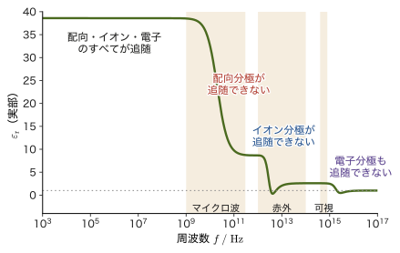
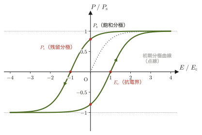
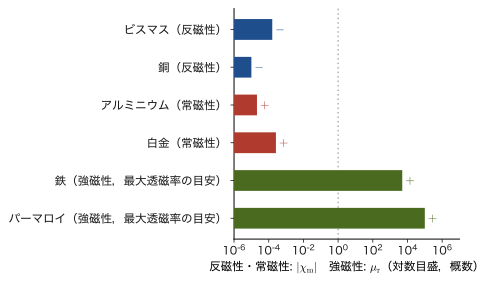
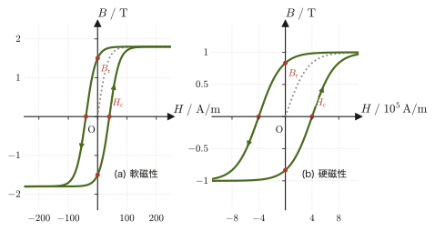
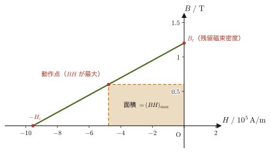

第41章物質中の電場と磁場 — 誘電体と磁性体
下敷きをこすって紙片を吸いつける実験，冷蔵庫に貼りつく磁石，電子部品のコンデンサーに詰まっている白いセラミックス，ハードディスクの中で情報を記録している磁性薄膜——これらはすべて，電場や磁場の中に置かれた「物質」が，場に応答して自分の状態を変えることで働いている．真空中では，電場は電荷だけから，磁場は電流だけから作られた（第35–39章）．しかし，絶縁体や磁性体を電場・磁場の中に置くと，物質を構成する無数の原子・分子が，場に応じてわずかに向きを変えたり，変形したりする．その結果，物質の内部や表面には，外から与えた電荷・電流とは別の，物質自身に由来する電荷・電流が新たに現れる．
この物質の応答をマクロにひとまとめにして表す量が，電場側の分極 $\bm P$ と，磁場側の磁化 $\bm M$ である．そして $\bm D=\varepsilon_0\bm E+\bm P$，$\bm H=\bm B/\mu_0-\bm M$ と定めると，$\bm D$ と $\bm H$ は物質の応答をあらかじめ吸収した量になり，物質中の法則が $\operatorname{div}\bm D=\rho_{\mathrm{f}}$，$\operatorname{rot}\bm H=\bm j_{\mathrm{f}}$ という簡潔な形に書ける．第35章や第38章で，$\bm D$ と $\bm H$ という2つの量を $\bm E,\bm B$ とほとんど同じものとして使ってきたのは，この物質中の一般論を先取りしていたからである．なぜ最初から $\bm E$ と $\bm B$ だけで済ませなかったのか——その答えが本章の主題である．
高校物理とのつながりを，先に挙げておこう．
- 高校で $C=\varepsilon_{\mathrm{r}} C_0$ と覚えたコンデンサーの式が，41.1.3節で，分極と $\bm D$ から導ける．
- 高校で $B=\mu_0nI$ と習ったソレノイドに鉄心を入れると，なぜ磁場が $\mu_{\mathrm{r}}$ 倍になるのかが，41.2節で分かる．
- 「鉄は磁石になる」という現象が，ヒステリシス曲線（41.2.4節）で定量的に表され，変圧器の鉄心と永久磁石の材料の違いが説明できる．
材料科学を学ぶ者にとって，誘電体（コンデンサーの誘電体層，強誘電体メモリ，圧電センサー）と磁性体（変圧器の鉄心，ハードディスク，永久磁石）は，電磁気学の中でもとりわけ工学的な応用に直結する分野であり，本章の内容は今後の専門科目の土台になる．
- 分極 $\bm P$ の定義と，物質内部・表面に生じる束縛電荷 $\rho_{\mathrm{b}}=-\operatorname{div}\bm P$，$\sigma_{\mathrm{b}}=\bm P\cdot\bm n$ の導出，電束密度の一般的な定義 $\bm D=\varepsilon_0\bm E+\bm P$
- 線形誘電体での比誘電率 $\varepsilon_{\mathrm{r}}$ の導入（$\bm D=\varepsilon\bm E$，$\varepsilon=\varepsilon_0\varepsilon_{\mathrm{r}}$）と，誘電体を挿入したコンデンサーの静電容量の変化 $C=\varepsilon_{\mathrm{r}}C_0$
- 分極が生じる3つの微視的機構（電子分極・イオン分極・配向分極）と周波数への応答，強誘電体（$\mathrm{BaTiO_3}$ など）・圧電体の性質と応用
- 磁化 $\bm M$ の定義と，磁化電流 $\bm j_{\mathrm{b}}=\operatorname{rot}\bm M$，$\bm K_{\mathrm{b}}=\bm M\times\bm n$ の導出，磁場の強さの一般的な定義 $\bm H=\bm B/\mu_0-\bm M$（$\bm B=\mu_0(\bm H+\bm M)$）
- 磁化率 $\chi_{\mathrm{m}}$・比透磁率 $\mu_{\mathrm{r}}$（$\mu=\mu_0\mu_{\mathrm{r}}=\mu_0(1+\chi_{\mathrm{m}})$）と，反磁性・常磁性（キュリーの法則）・強磁性の分類，強磁性体のヒステリシス曲線，軟磁性材料と硬磁性材料（永久磁石）の応用
- 自由電荷・自由電流だけを使ったガウスの法則 $\operatorname{div}\bm D=\rho_{\mathrm{f}}$・アンペールの法則 $\operatorname{rot}\bm H=\bm j_{\mathrm{f}}$ の意味と使える条件，誘電体・磁性体・導体の境界面での接続条件と電気力線の屈折
関連するノート：本章はノートに無い内容を補った章である．関連するノート：望月泰英『物理学ノート 電磁気学』．
41.1 誘電体と分極
誘電体（dielectric）とは，自由に動き回れる電荷（自由電荷，free charge）をほとんど持たない物質，すなわち電気を通さない絶縁体（insulator）のことである．ガラス・ゴム・多くのセラミックス・大気中の空気などが誘電体の例である．誘電体には自由電荷がないので，電流は流れない．しかし，誘電体を電場の中に置くと，何も起こらないわけではない——誘電体を構成する原子・分子1つひとつの中では，正の電荷（原子核）と負の電荷（電子雲）が電場から逆向きの力を受け，ごくわずかに引き離される．あるいは，もともと電荷の偏り（永久双極子モーメント）を持つ分子（水分子 $\mathrm{H_2O}$ など）は，電場の向きに合わせてわずかに回転する．どちらの場合も，原子・分子1個1個が，正負の電荷が少しだけ離れた小さな電気双極子（electric dipole）になる．誘電体全体で見れば，こうした無数の微小な双極子が電場の向きにわずかに揃うことで，物質はマクロに見て一様に「分極」した状態になる．
想起：電気双極子モーメントと，外部電場の中でのトルク・エネルギー
大きさが等しく符号が逆の2つの電荷 $+q,-q$ が距離 $\abs{\bm d}$ だけ離れた組を電気双極子といい，電気双極子モーメント（electric dipole moment）を，負電荷から正電荷へ向かうベクトル $\bm d$ を使って $\bm p=q\bm d$ と定める（単位は $\mathrm{C\,m}$．第36章36.8節）．
一様な電場 $\bm E$ の中では，$+q$ は力 $q\bm E$，$-q$ は力 $-q\bm E$ を受けるので，合力は $\bm 0$ だが，双極子の中心のまわりの力のモーメントは，$\tfrac12\bm d\times q\bm E+\bigl(-\tfrac12\bm d\bigr)\times(-q\bm E)=q\bm d\times\bm E$，すなわち
\begin{equation} \bm N=\bm p\times\bm E \label{eq:41-torque} \end{equation}である．$\bm p$ と $\bm E$ のなす角を $\theta$ とすると，トルクの大きさは $pE\sin\theta$ で，$\theta$ を小さくする向き（$\bm p$ を $\bm E$ に近づける向き）にはたらく．このトルクに逆らって $\theta$ を $\dd\theta$ だけ増やすのに必要な仕事は $pE\sin\theta\,\dd\theta$ だから，$\theta=90^\circ$ を基準にした位置エネルギーは
\begin{equation} U=-pE\cos\theta=-\bm p\cdot\bm E \label{eq:41-Uenergy} \end{equation}となる．エネルギーがいちばん低いのは $\bm p\parallel\bm E$ のときなので，双極子は $\bm E$ の向きに揃おうとする（熱運動はそれを乱そうとする）．磁気双極子モーメント $\bm m$ も，磁束密度 $\bm B$ の中で同じ形のトルク $\bm N=\bm m\times\bm B$ とエネルギー $U=-\bm m\cdot\bm B$ を持つ（41.2節）．
単位の確認：$[\bm p\cdot\bm E]=\mathrm{C\,m}\times\mathrm{V/m}=\mathrm{C\,V}=\mathrm{J}$ で，エネルギーの単位と一致する．
定義41.1 分極ベクトル $\bm P$
誘電体中の，原子・分子1個の大きさよりはるかに大きく，しかも物質全体の変化の大きさよりはるかに小さい体積 $\Delta V$（中にはなお無数の原子・分子が含まれる）をとり，その中に含まれる電気双極子モーメントの総和を $\Delta\bm p$ とするとき，
\begin{equation} \bm P\equiv\frac{\Delta\bm p}{\Delta V}\qquad[\mathrm{C/m^2}] \label{eq:41-P-def} \end{equation}を分極ベクトル（polarization vector），または単に分極という．すなわち $\bm P$ は「単位体積あたりの電気双極子モーメント」であり，各点の物質がどれだけ強く，どの向きに分極しているかを表すベクトル場である．電場が無い（あるいは弱い）ところでは，個々の双極子の向きはばらばらか，双極子そのものがほとんど誘起されないので $\bm P\approx\bm 0$ であり，電場をかけると双極子が電場の向きに揃うことで $\bm P\neq\bm 0$ になる．
単位の確認：$[\bm p]/[V]=\mathrm{C\,m}/\mathrm{m^3}=\mathrm{C/m^2}$．これは面電荷密度の単位と同じで，のちに現れる表面束縛電荷 $\sigma_{\mathrm{b}}=\bm P\cdot\bm n$ と一致する．
なお，$\bm P$ の定義の考え方は，のちに41.2節で学ぶ磁化 $\bm M$ の定義（単位体積あたりの磁気双極子モーメント）と，完全に対応している——電場側の応答が $\bm P$，磁場側の応答が $\bm M$ である，という対応関係を覚えておくと，この先の議論の見通しがよくなる．
応用：分極が起こる3つの微視的機構
物質が分極する仕組みは，主に次の3つに分類される（図41.1）．どの機構が支配的かによって，誘電体の比誘電率（41.1.2節で導入する）が電場の振動数にどう応答するかが大きく変わる．
- 電子分極（electronic polarization）：原子核のまわりに広がった電子雲全体が，電場から力を受けて原子核に対してわずかにずれることで生じる双極子．すべての原子・分子に存在する，もっとも普遍的な機構である．電子はきわめて軽いので，非常に速い電場の変化（可視光の振動数 $\sim10^{15}\ \mathrm{Hz}$ 程度）にも追随できる．
- イオン分極（ionic polarization）：$\mathrm{NaCl}$ のようなイオン結晶で，正イオンと負イオンが電場から逆向きの力を受け，格子内でわずかに変位することで生じる双極子．イオンは電子より重いので，応答が遅く，赤外線程度の振動数（$\sim10^{13}\ \mathrm{Hz}$）までしか追随できない．
- 配向分極（orientational polarization）：水分子のように，分子がもともと永久双極子モーメントを持っている場合，熱運動でばらばらの向きを向いていた分子が，電場をかけると統計的にわずかに電場の向きへ揃うことで生じる正味の分極．分子全体が回転する必要があるため，3つの中でもっとも応答が遅い（水はマイクロ波，$\sim10^{10}\ \mathrm{Hz}$ 程度まで．電子レンジが水分子を選択的に温められるのは，この配向分極が電磁波のエネルギーを吸収するためである）．
例題41.1 水分子の配向分極はどれくらい揃うのか
水分子の電気双極子モーメントは $p=6.2\times10^{-30}\ \mathrm{C\,m}$ である．室温 $T=300\ \mathrm K$ の水に電場 $E=1.0\times10^{6}\ \mathrm{V/m}$ をかけたとき，双極子が電場に揃おうとするエネルギーと熱運動のエネルギーの比 $pE/(k_{\mathrm B}T)$ を求めよ．また，この値から，分子の配向がどの程度揃っているかを述べよ．
解答 揃おうとするエネルギーの大きさは，式\eqref{eq:41-Uenergy}より $pE$，熱運動のエネルギーの目安は $k_{\mathrm B}T$（$k_{\mathrm B}=1.380\,649\times10^{-23}\ \mathrm{J/K}$）である．
$$ \frac{pE}{k_{\mathrm B}T}=\frac{(6.2\times10^{-30}\ \mathrm{C\,m})(1.0\times10^{6}\ \mathrm{V/m})}{(1.380\,649\times10^{-23}\ \mathrm{J/K})(300\ \mathrm K)}\approx1.5\times10^{-3} $$（単位の確認：分子は $\mathrm{C\,m\cdot V/m}=\mathrm{C\,V}=\mathrm J$ で，分母の $\mathrm{J}$ と一致し，比は無次元である．）この比が $1$ よりはるかに小さいので，熱運動が圧倒的に優勢で，分子の向きはほとんど乱れたままである．統計力学によれば，比 $x=pE/(k_{\mathrm B}T)$ が小さいとき，各分子の双極子モーメントの電場方向の平均成分は $p\,x/3$ となり（係数 $1/3$ は3次元での向きの平均から出る），電場に比例する．つまり，$p$ の約 $x/3\approx5\times10^{-4}$，およそ2000個に1個分しか揃っていない．しかし水は $1\ \mathrm{m^3}$ に約 $3\times10^{28}$ 個の分子を含むので，そのわずかな偏りが積もって，巨視的な分極 $\bm P$ になる．また「わずかな偏りは $\bm E$ に比例する」ことが，41.1.2節の線形誘電体 $\bm P=\varepsilon_0\chi_{\mathrm{e}}\bm E$ の微視的な根拠である．
41.1.1 束縛電荷 $\rho_{\mathrm{b}}=-\operatorname{div}\bm P$ と $\sigma_{\mathrm{b}}=\bm P\cdot\bm n$ の導出
分極した誘電体は，全体として電気的に中性であっても——プラスとマイナスの電荷の総量は変わらない——その内部や表面には，外から加えた自由電荷とは別の，電荷の偏りが現れる．これを束縛電荷（bound charge，分極電荷 polarization charge ともいう）という．束縛電荷は，個々の原子・分子の中の電荷が「束縛」されたまま（自由に動けないまま）わずかにずれることで生じる電荷であり，自由電荷のように物質の外から出入りできる電荷ではない．以下では，分極ベクトル $\bm P$ から，束縛電荷を求める一般的な関係を導く．
導出：束縛電荷密度 $\rho_{\mathrm{b}}=-\operatorname{div}\bm P$
誘電体の内部に，任意の閉曲面 $S$（内部の体積 $V$，外向き法線 $\bm n$）を考える．双極子1個は，$-q$ と $+q$ が $\bm d$（負電荷から正電荷へ向かうベクトル）だけ離れたもので，$\bm p=q\bm d$ である．また，単位体積あたりの双極子の数を $N_{\mathrm d}$ とし，簡単のため，どの双極子も同じ $\bm p$ を持つとする（このとき $\bm P=N_{\mathrm d}\bm p=N_{\mathrm d}q\bm d$）．
$S$ の微小な面素 $\dd S$ に注目する．$S$ を横切って正電荷を外へ運び出しているのは，負電荷が $S$ の内側，正電荷が外側にある双極子である．その双極子の負電荷は，$\dd S$ を底面として，$-\bm d$ だけずらした斜めの柱（図41.2の平行四辺形）の中にある．柱の高さは，$\bm d$ の法線成分 $\bm d\cdot\bm n$ に等しいので，柱の体積は $(\bm d\cdot\bm n)\,\dd S$，中にある双極子の数は $N_{\mathrm d}(\bm d\cdot\bm n)\,\dd S$ である（$\bm d\cdot\bm n\lt0$ の場合は，正電荷が内側へ入ってくる双極子の数え方になり，符号つきで同じ式になる）．各双極子が正電荷 $q$ を外へ運ぶので，$\dd S$ を通って外へ運び出される電荷は，
$$ N_{\mathrm d}q(\bm d\cdot\bm n)\,\dd S=(N_{\mathrm d}q\bm d)\cdot\bm n\,\dd S=\bm P\cdot\bm n\,\dd S $$である（第35章で発散定理を「水の湧き出し」にたとえたのと同じ考え方である）．これを閉曲面 $S$ 全体で足し合わせると，$S$ を通って外へ運び出された正味の電荷の総量 $\displaystyle\oint_S\bm P\cdot\bm n\,\dd S$ になる．誘電体全体は中性なので，外へ出ていった分だけ，$S$ の内部には同じ量の負電荷が取り残される．つまり，$S$ の内部に残る束縛電荷の総量 $Q_{\mathrm{b},\text{enc}}$ は，
\begin{equation} Q_{\mathrm{b},\text{enc}}=-\oint_S\bm P\cdot\bm n\,\dd S \label{eq:41-Qb-surface} \end{equation}である．発散定理（大学数学 第20章 20.5節，第35章35.3節でも使った）を右辺に適用すると，$\displaystyle\oint_S\bm P\cdot\bm n\,\dd S=\int_V(\operatorname{div}\bm P)\,\dd V$ である．一方，左辺は束縛電荷密度 $\rho_{\mathrm{b}}$ を使って $Q_{\mathrm{b},\text{enc}}=\displaystyle\int_V\rho_{\mathrm{b}}\,\dd V$ と書けるので，
$$ \int_V\rho_{\mathrm{b}}\,\dd V=-\int_V(\operatorname{div}\bm P)\,\dd V $$が任意の体積 $V$ について成り立つ．第35章35.3節でガウスの法則の微分形を導いたときとまったく同じ論法（どんなに小さい体積で積分しても両辺が一致するためには，被積分関数が各点で等しくなければならない）により，
\begin{equation} \rho_{\mathrm{b}}=-\operatorname{div}\bm P \label{eq:41-rhob} \end{equation}が得られる．単位の確認：$[\operatorname{div}\bm P]=(\mathrm{C/m^2})/\mathrm m=\mathrm{C/m^3}$ で，体積電荷密度の単位と一致する．
（導出終わり）
導出：表面束縛電荷密度 $\sigma_{\mathrm{b}}=\bm P\cdot\bm n$
誘電体の表面（外向き法線 $\bm n$）の面素 $\Delta S$ を考える．表面の内側に，底面が $\Delta S$，高さが $\bm d\cdot\bm n$ の斜めの薄い柱（図41.2）をとる．この柱の中に負電荷を持つ双極子は，正電荷が表面から外へはみ出している（$\bm d\cdot\bm n\gt0$ のとき）．誘電体の内部では，はみ出した正電荷は，隣の双極子の負電荷と重なって打ち消されるが，表面のすぐ外側には誘電体が無いので，はみ出した正電荷を打ち消す相手が無い．したがって，表面のすぐ外側に，
$$ N_{\mathrm d}q(\bm d\cdot\bm n)\,\Delta S=\bm P\cdot\bm n\,\Delta S $$の電荷が表面に張りついて残る（外側で $\bm P=\bm 0$ とみなしている）．これを $\Delta S$ で割って，表面束縛電荷の面密度
\begin{equation} \sigma_{\mathrm{b}}=\bm P\cdot\bm n \label{eq:41-sigmab} \end{equation}が得られる（$\bm P\cdot\bm n\lt0$ なら負の電荷）．単位は $[\bm P]=\mathrm{C/m^2}$ で，面電荷密度と一致する．
（導出終わり）
法則41.1 束縛電荷
分極 $\bm P$ を持つ誘電体の内部には，$\rho_{\mathrm{b}}=-\operatorname{div}\bm P$ で与えられる体積束縛電荷密度が生じ，表面（外向き法線 $\bm n$）には，面密度 $\sigma_{\mathrm{b}}=\bm P\cdot\bm n$ の表面束縛電荷が生じる．誘電体全体で束縛電荷の総量を足し合わせると， $\displaystyle\int_V\rho_{\mathrm{b}}\,\dd V+\oint_{\partial V}\sigma_{\mathrm{b}}\,\dd S=-\int_V(\operatorname{div}\bm P)\,\dd V+\oint_{\partial V}\bm P\cdot\bm n\,\dd S=0$（発散定理により2つの項が打ち消し合う）となり，誘電体全体としては電気的に中性のままである．
例題41.2 一様に分極した誘電体スラブの束縛電荷（$\mathrm{BaTiO_3}$ の自発分極）
厚さ $d$ の誘電体スラブが，大きさ $P_0$ の一様な分極 $\bm P=P_0\,\bm e_z$（$z$ 軸方向）を持っているとする．(a) スラブ内部の体積束縛電荷密度 $\rho_{\mathrm{b}}$ を求めよ．(b) スラブの上面（外向き法線 $\bm n=\bm e_z$）と下面（外向き法線 $\bm n=-\bm e_z$）の表面束縛電荷密度をそれぞれ求めよ．(c) 室温のチタン酸バリウム $\mathrm{BaTiO_3}$（41.1.4節）は，外部電場が無くても $P_0=0.26\ \mathrm{C/m^2}$ の自発分極を持つ．面積 $1.0\ \mathrm{cm^2}$ の面に現れる束縛電荷を求めよ．
解答 (a) $\bm P=(0,0,P_0)$ で $P_0$ は定数（一様）なので，発散は
$$ \operatorname{div}\bm P=\pdiff{P_x}{x}+\pdiff{P_y}{y}+\pdiff{P_z}{z}=0+0+0=0 $$となる（各成分が位置によらない定数なので，どの偏微分も0）．法則41.1より，
$$ \rho_{\mathrm{b}}=-\operatorname{div}\bm P=0 $$である——図41.3で見たとおり，スラブ内部では隣り合う双極子の電荷がちょうど打ち消し合うので，体積束縛電荷は生じない．
(b) 式\eqref{eq:41-sigmab}より，上面（$\bm n=\bm e_z=(0,0,1)$）では，
$$ \sigma_{\mathrm{b},\text{上}}=\bm P\cdot\bm n=(0,0,P_0)\cdot(0,0,1)=P_0 $$下面（$\bm n=-\bm e_z=(0,0,-1)$）では，
$$ \sigma_{\mathrm{b},\text{下}}=\bm P\cdot\bm n=(0,0,P_0)\cdot(0,0,-1)=-P_0 $$となる．上面には $+P_0$，下面には $-P_0$ の表面束縛電荷が現れ，スラブ全体では上面の正電荷と下面の負電荷がちょうど打ち消し合い，正味の電荷は0（電気的中性）のままである．
(c) $\sigma_{\mathrm{b}}=P_0=0.26\ \mathrm{C/m^2}$．面積 $S=1.0\ \mathrm{cm^2}=1.0\times10^{-4}\ \mathrm{m^2}$ の面に現れる電荷は，
$$ Q=\sigma_{\mathrm{b}}S=(0.26\ \mathrm{C/m^2})(1.0\times10^{-4}\ \mathrm{m^2})=2.6\times10^{-5}\ \mathrm C=26\ \mu\mathrm C $$である（$0.26\ \mathrm{C/m^2}=26\ \mu\mathrm{C/cm^2}$）．外部から電荷を与えなくても，誘電体の1つの面が $26\ \mu\mathrm C$ もの電荷を持つことになる．分極による電荷は，物質の中の双極子の総和として，実際に測れる大きさになるのである．
例題41.3 分極が一様でないときの束縛電荷
$0\le z\le d$ を占める誘電体スラブ（断面積 $S$）が，位置とともに変わる分極 $\bm P=P_0\dfrac{z}{d}\,\bm e_z$ を持っている．(a) 体積束縛電荷密度 $\rho_{\mathrm{b}}$ を求めよ．(b) 上面（$z=d$）と下面（$z=0$）の表面束縛電荷密度を求めよ．(c) スラブ全体の束縛電荷の総和が0になることを確かめよ．
解答 (a) $P_x=P_y=0$，$P_z=P_0z/d$ なので，
$$ \rho_{\mathrm{b}}=-\operatorname{div}\bm P=-\pdiff{P_z}{z}=-\frac{P_0}{d} $$と，一様な負の電荷密度が生じる（発散が電荷を生む，という式の中心がここに現れている）．単位は $(\mathrm{C/m^2})/\mathrm m=\mathrm{C/m^3}$ である．
(b) 上面（$\bm n=\bm e_z$，$P_z=P_0$）では $\sigma_{\mathrm{b}}=\bm P\cdot\bm n=+P_0$，下面（$\bm n=-\bm e_z$，$P_z=0$）では $\sigma_{\mathrm{b}}=\bm P\cdot\bm n=0$ である．
(c) 体積内の電荷は $\rho_{\mathrm{b}}\times(Sd)=-\dfrac{P_0}{d}Sd=-P_0S$，上面の電荷は $+P_0S$，下面の電荷は $0$．合計は $-P_0S+P_0S+0=0$ で，誘電体全体は中性のままである．一様なとき（例題41.2）は内部の電荷が0で表面だけに電荷が現れたが，一様でないとき（この例題）は内部にも電荷が広がって現れる．
41.1.2 電束密度 $\bm D$ の一般的な定義と比誘電率
束縛電荷が生じるということは，物質中のガウスの法則（真空中の電場 $\bm E$ が満たす法則35.3，$\operatorname{div}\bm E=\rho/\varepsilon_0$）の右辺の電荷密度 $\rho$ に，外から加えた自由電荷密度 $\rho_{\mathrm{f}}$ だけでなく，物質の応答として生じた束縛電荷密度 $\rho_{\mathrm{b}}$ も加えなければならないことを意味する：
$$ \operatorname{div}\bm E=\frac{\rho_{\mathrm{f}}+\rho_{\mathrm{b}}}{\varepsilon_0}=\frac{\rho_{\mathrm{f}}}{\varepsilon_0}-\frac{\operatorname{div}\bm P}{\varepsilon_0} $$（最後の等号で式\eqref{eq:41-rhob}を使った）．両辺に $\varepsilon_0$ を掛けて整理すると，
$$ \operatorname{div}(\varepsilon_0\bm E)+\operatorname{div}\bm P=\rho_{\mathrm{f}} \qquad\therefore\quad \operatorname{div}(\varepsilon_0\bm E+\bm P)=\rho_{\mathrm{f}} $$となる．束縛電荷 $\rho_{\mathrm{b}}$（物質の応答であり，$\bm E$ を通じて自動的に決まる，いわば「従属変数」）をあらわに扱わなくて済むように，$\varepsilon_0\bm E+\bm P$ という組み合わせに新しい名前を与えよう——これが，第35章35.4節で真空中の特別な場合として先取りして導入した電束密度 $\bm D$ の，物質中まで通用する一般的な定義である．
定義41.2 電束密度（一般の物質中）
電場 $\bm E$ と分極 $\bm P$ を用いて，電束密度 $\bm D\ [\mathrm{C/m^2}]$ を，
\begin{equation} \bm D\equiv\varepsilon_0\bm E+\bm P \label{eq:41-D-general} \end{equation}で定義する．真空中（あるいは物質が存在しても分極していない場合）は $\bm P=\bm 0$ なので，式\eqref{eq:41-D-general}は第35章定義35.4の $\bm D=\varepsilon_0\bm E$ にちょうど一致する——第35章の定義は，本定義41.2の $\bm P=\bm 0$ という特別な場合だったのである．
単位の確認：$[\varepsilon_0\bm E]=(\mathrm{F/m})(\mathrm{V/m})=\mathrm{C/m^2}$（$\mathrm F=\mathrm{C/V}$），これは $[\bm P]=\mathrm{C/m^2}$ と一致する．
誘電体の多く（強誘電体を除く，41.1.4節）は，電場がそれほど強くない範囲では，分極 $\bm P$ が加えた電場 $\bm E$ に比例して誘起される——これを線形誘電体（linear dielectric）という．比例定数を電気感受率（electric susceptibility）$\chi_{\mathrm{e}}$（無次元）とすると，
\begin{equation} \bm P=\varepsilon_0\chi_{\mathrm{e}}\bm E \label{eq:41-P-linear} \end{equation}と書ける（例題41.1で見たとおり，微視的には，$pE/(k_{\mathrm B}T)\ll1$ での「揃い具合は $E$ に比例する」ことの帰結である）．これを式\eqref{eq:41-D-general}に代入すると，
$$ \bm D=\varepsilon_0\bm E+\varepsilon_0\chi_{\mathrm{e}}\bm E=\varepsilon_0(1+\chi_{\mathrm{e}})\bm E $$となり，$\bm D$ は $\bm E$ に単純に比例する．この比例定数をまとめて誘電率（permittivity）$\varepsilon\equiv\varepsilon_0(1+\chi_{\mathrm{e}})$ と呼び，$\varepsilon$ と真空の誘電率 $\varepsilon_0$ の比を比誘電率（relative permittivity）$\varepsilon_{\mathrm{r}}\equiv\varepsilon/\varepsilon_0=1+\chi_{\mathrm{e}}$（無次元，静的な電場では $\varepsilon_{\mathrm{r}}\geq1$）と呼ぶ．
法則41.2 線形誘電体の構成方程式
線形誘電体では，電束密度と電場のあいだに，
\begin{equation} \bm D=\varepsilon\bm E=\varepsilon_0\varepsilon_{\mathrm{r}}\bm E \label{eq:41-D-linear} \end{equation}という単純な比例関係が成り立つ（$\varepsilon=\varepsilon_0\varepsilon_{\mathrm{r}}$ を誘電率，$\varepsilon_{\mathrm{r}}=1+\chi_{\mathrm{e}}$ を比誘電率という）．真空は $\chi_{\mathrm{e}}=0$，$\varepsilon_{\mathrm{r}}=1$ の極限にあたる．比誘電率は物質ごとに決まった値を持つ（表41.1）．
注意：$\bm D=\varepsilon\bm E$ が成り立つ範囲
法則41.2は，物質が等方的で線形で，電場が静的（あるいはゆっくり変化する）ときの近似である．(1) 結晶（$\mathrm{BaTiO_3}$，水晶など）では，$\varepsilon$ は $3\times3$ の行列（テンソル）になり，$\bm P$ と $\bm E$ の向きは一般に異なる．(2) 電場が強くなると $\bm P$ は $\bm E$ に比例しなくなる（強誘電体では特に顕著，41.1.4節）．(3) $\varepsilon_{\mathrm{r}}$ は温度や電場の振動数によって変わる（図41.4）．
| 物質 | $\varepsilon_{\mathrm{r}}$ | 主な分極機構・用途 |
|---|---|---|
| 空気（1気圧） | $1.0006$ | ほぼ真空と同じ |
| プラスチック（ポリエチレンなど） | $2$–$3$ | 電子分極（＋弱い配向分極）．絶縁被覆，フィルムコンデンサー |
| $\mathrm{SiO_2}$（半導体の熱酸化膜） | $3.9$ | 電子分極・イオン分極．トランジスタのゲート絶縁膜 |
| ガラス | $4$–$7$ | 電子分極・イオン分極 |
| $\mathrm{Al_2O_3}$（アルミナ） | 約 $9$ | イオン分極．セラミックス基板 |
| シリコン $\mathrm{Si}$ | 約 $12$ | 電子分極（半導体） |
| 水（$20\ ^\circ\mathrm C$） | 約 $80$ | 配向分極（極性分子） |
| $\mathrm{BaTiO_3}$ 系セラミックス | $10^3$ のオーダー | 強誘電体．積層セラミックコンデンサー |
表のシリコンについて，電場が赤外線の振動数のとき，電子分極だけが追随できるので屈折率 $n$（第13章13.3節）は $n\approx\sqrt{\varepsilon_{\mathrm{r}}}$ となる（物質中の電磁波の速さは，第42章の真空の議論で $\varepsilon_0,\mu_0$ を $\varepsilon,\mu$ に替えた $v=1/\sqrt{\varepsilon\mu}$ となり，$n=c/v=\sqrt{\varepsilon_{\mathrm{r}}\mu_{\mathrm{r}}}$ で，磁性の無い物質では $\mu_{\mathrm{r}}\approx1$）．実際，シリコンの赤外線での $n\approx3.4$ から $n^2\approx12$ で，静的な $\varepsilon_{\mathrm{r}}$ とほぼ一致する．一方，水の静的な $\varepsilon_{\mathrm{r}}\approx80$ に対して，可視光での屈折率は $n\approx1.33$（$n^2\approx1.8$）にすぎない．可視光の振動数では，水分子の回転（配向分極）も，分子内のイオン的な変位も追随できず，電子分極だけが残るからである．図41.4は，機構ごとに $\varepsilon_{\mathrm{r}}$ が振動数とともに階段状に下がるようすを模式的に示す．

注意：$\bm D$ と $\bm E$ を区別する必要があるのは，物質中だけ
真空中では $\bm P=\bm 0$ なので $\bm D=\varepsilon_0\bm E$ となり，$\bm D$ は $\bm E$ の定数倍というだけの情報しか持たない——だからこそ第35章では，$\bm D$ と $\bm E$ をほとんど同じものとして自由に行き来してよいと述べた．しかし物質中では，$\bm D=\varepsilon_0\bm E+\bm P$ の $\bm P$ が物質の応答として独立に効いてくるため，一般には $\bm D$ と $\bm E$ は（比例定数 $\varepsilon_{\mathrm{r}}$ が物質によって異なるという意味で）別の量として扱わなければならない．同じ自由電荷を置いたとき，まわりを満たす誘電体の $\varepsilon_{\mathrm{r}}$ が違えば，（対称性の高い配置では）$\bm D$ は自由電荷だけで決まる同じ値のままなのに対し，$\bm E=\bm D/\varepsilon$ は物質によって異なる値になる（41.3節例題41.9でこの点をもう一度取り上げる）．
41.1.3 誘電体を挿入したコンデンサー
比誘電率 $\varepsilon_{\mathrm{r}}$ の効果がもっとも直接に現れる身近な例が，コンデンサーである．第36章で学んだ平行板コンデンサーは，2枚の電極の間が真空（またはほぼ真空とみなせる空気）で満たされているとして，静電容量 $C_0=\varepsilon_0S/d$（$S$：電極の面積，$d$：電極間の距離）を持っていた．電極間を比誘電率 $\varepsilon_{\mathrm{r}}$ の誘電体で完全に満たすと何が起こるかを，分極から1行ずつ導こう．
導出：分極が電場を弱める仕組みと $C=\varepsilon_{\mathrm{r}}C_0$
上の電極に自由電荷 $+Q_{\mathrm{f}}$，下の電極に $-Q_{\mathrm{f}}$ を与え，電極間を誘電体で満たす．電極の面積を $S$ とし，電極上の自由電荷の面密度を $\sigma_{\mathrm{f}}=Q_{\mathrm{f}}/S$ とする（図41.5）．電場 $\bm E$ は上から下へ向くので，誘電体の分極 $\bm P$ も下向きである．したがって，上の電極に接する誘電体の面（外向き法線は上向き）の表面束縛電荷は $\sigma_{\mathrm{b}}=\bm P\cdot\bm n=-P$，下の電極に接する面は $\sigma_{\mathrm{b}}=+P$ である（$P$ は $\bm P$ の大きさ）．
極板間の電場は，極板の自由電荷がつくる電場（大きさ $\sigma_{\mathrm{f}}/\varepsilon_0$，下向き）と，2つの面の束縛電荷がつくる電場（大きさ $P/\varepsilon_0$，上向き．束縛電荷は自由電荷と逆符号で，電場を打ち消す向きに効く）の重ね合わせである（無限に広い帯電平面のつくる電場の重ね合わせ，第35章）．したがって，
\begin{equation} E=\frac{\sigma_{\mathrm{f}}-P}{\varepsilon_0} \label{eq:41-Eplate} \end{equation}である．ここで $-P/\varepsilon_0$ は，分極した物質がつくる反分極電場（depolarizing field）であり，電場を弱める．線形誘電体 $P=\varepsilon_0\chi_{\mathrm{e}}E$（式\eqref{eq:41-P-linear}）を代入すると，$\varepsilon_0E=\sigma_{\mathrm{f}}-\varepsilon_0\chi_{\mathrm{e}}E$ より，
$$ E=\frac{\sigma_{\mathrm{f}}}{\varepsilon_0(1+\chi_{\mathrm{e}})}=\frac{\sigma_{\mathrm{f}}}{\varepsilon_0\varepsilon_{\mathrm{r}}}=\frac{\sigma_{\mathrm{f}}}{\varepsilon} $$となり，電場は，誘電体が無いとき（$E_0=\sigma_{\mathrm{f}}/\varepsilon_0$）の $1/\varepsilon_{\mathrm{r}}$ 倍に弱まる．また，$D=\varepsilon_0E+P=\sigma_{\mathrm{f}}$ であり，電束密度は自由電荷の面密度に等しい（第35章の平板の議論と同じ形）．さらに，束縛電荷の大きさは $P=\varepsilon_0\chi_{\mathrm{e}}E=\dfrac{\varepsilon_{\mathrm{r}}-1}{\varepsilon_{\mathrm{r}}}\sigma_{\mathrm{f}}$ なので，
$$ \sigma_{\mathrm{b}}=-\Bigl(1-\frac1{\varepsilon_{\mathrm{r}}}\Bigr)\sigma_{\mathrm{f}}\quad(\text{上の電極側の面}) $$である（自由電荷 $\sigma_{\mathrm{f}}$ のうち，割合 $1-1/\varepsilon_{\mathrm{r}}$ が誘電体の束縛電荷に「打ち消され」，電極面にはたらく正味の電荷は $\sigma_{\mathrm{f}}/\varepsilon_{\mathrm{r}}$ に見える）．電圧は $V=Ed=\dfrac{\sigma_{\mathrm{f}}d}{\varepsilon}=\dfrac{Q_fd}{\varepsilon S}$ だから，静電容量は
$$ C=\frac{Q_{\mathrm{f}}}{V}=\frac{\varepsilon S}{d}=\varepsilon_{\mathrm{r}}\cdot\frac{\varepsilon_0S}{d}=\varepsilon_{\mathrm{r}}C_0 $$となる．単位の確認：$[\varepsilon S/d]=(\mathrm{F/m})\mathrm{m^2}/\mathrm m=\mathrm F$．
（導出終わり）
法則41.3 誘電体を挿入したコンデンサーの静電容量
平行板コンデンサーの電極間を比誘電率 $\varepsilon_{\mathrm{r}}$ の誘電体で完全に満たすと，静電容量は，真空のときの値 $C_0$ の $\varepsilon_{\mathrm{r}}$ 倍になる：
\begin{equation} C=\varepsilon_{\mathrm{r}}C_0 \label{eq:41-C-dielectric} \end{equation}同じ電圧をかけたときに蓄えられる電荷が増える（あるいは同じ電荷を蓄えるのに必要な電圧が下がる）ため，誘電体を挿入したコンデンサーは，同じ体積でより大きな静電容量を実現できる——電子部品としてのコンデンサーの多くが，電極間に薄いセラミックスやプラスチックフィルムなどの誘電体を挟んでいる理由である．
例題41.4 比誘電率 $\varepsilon_{\mathrm{r}}=5$ の誘電体を挿入したコンデンサー
面積 $S=1.00\times10^{-2}\ \mathrm{m^2}$（$100\ \mathrm{cm^2}$），電極間隔 $d=1.00\times10^{-3}\ \mathrm{m}$（$1.0\ \mathrm{mm}$）の平行板コンデンサーがある．(a) 電極間が真空のときの静電容量 $C_0$ を求めよ．(b) 電極間を比誘電率 $\varepsilon_{\mathrm{r}}=5$ の誘電体で完全に満たしたときの静電容量 $C$ を求めよ．(c) (b) のコンデンサーに $V=100\ \mathrm V$ の電圧をかけたとき，電極間の $E,D,P$ と，電極の自由電荷の面密度 $\sigma_{\mathrm{f}}$，誘電体の表面束縛電荷の面密度 $\sigma_{\mathrm{b}}$ を求め，$D=\varepsilon_0E+P$ を数値で確かめよ．
解答 (a) 第36章の公式 $C_0=\varepsilon_0S/d$ に数値を代入すると，
$$ C_0=\varepsilon_0\frac{S}{d}=(8.854\,187\,8128\times10^{-12}\ \mathrm{F/m})\times\frac{1.00\times10^{-2}\ \mathrm{m^2}}{1.00\times10^{-3}\ \mathrm{m}}\approx8.85\times10^{-11}\ \mathrm F=88.5\ \mathrm{pF} $$(b) 法則41.3（式\eqref{eq:41-C-dielectric}）より，
$$ C=\varepsilon_{\mathrm{r}}C_0=5\times88.5\ \mathrm{pF}\approx4.43\times10^{2}\ \mathrm{pF}=443\ \mathrm{pF} $$誘電体を挿入するだけで，同じ電極形状のまま静電容量がちょうど5倍（$\varepsilon_{\mathrm{r}}$ 倍）になった．
(c) 電場は $E=V/d=100\ \mathrm V/(1.00\times10^{-3}\ \mathrm m)=1.00\times10^{5}\ \mathrm{V/m}$．電束密度は，法則41.2より，
$$ D=\varepsilon_0\varepsilon_{\mathrm{r}}E=5\times(8.854\times10^{-12})(1.00\times10^{5})\approx4.43\times10^{-6}\ \mathrm{C/m^2} $$分極は，$P=D-\varepsilon_0E=(\varepsilon_{\mathrm{r}}-1)\varepsilon_0E=4\times(8.854\times10^{-12})(1.00\times10^{5})\approx3.54\times10^{-6}\ \mathrm{C/m^2}$．自由電荷の面密度は $\sigma_{\mathrm{f}}=D\approx4.43\times10^{-6}\ \mathrm{C/m^2}$（検算：$Q=CV=443\ \mathrm{pF}\times100\ \mathrm V=4.43\times10^{-8}\ \mathrm C$，$Q/S=4.43\times10^{-6}\ \mathrm{C/m^2}$ で一致）．表面束縛電荷の大きさは $\sigma_{\mathrm{b}}=-P\approx-3.54\times10^{-6}\ \mathrm{C/m^2}$（上の電極側）で，$-(1-1/\varepsilon_{\mathrm{r}})\sigma_{\mathrm{f}}=-0.8\times4.43\times10^{-6}$ とも一致する．最後に，$\varepsilon_0E+P=8.85\times10^{-7}+3.54\times10^{-6}\approx4.43\times10^{-6}\ \mathrm{C/m^2}=D$ が成り立つ．電場を作っているのは自由電荷 $4.43$ のうち束縛電荷 $3.54$ に打ち消された残りの $0.885\ (\times10^{-6}\ \mathrm{C/m^2})$ だけで，これが $\varepsilon_0E$ に等しい．
41.1.4 強誘電体と圧電体
ほとんどの誘電体では，分極 $\bm P$ は電場 $\bm E$ を切ればすぐに $\bm 0$ に戻る（式\eqref{eq:41-P-linear}のとおり，$\bm P$ は $\bm E$ に従属して決まる）．ところが一部の結晶——チタン酸バリウム $\mathrm{BaTiO_3}$，チタン酸ジルコン酸鉛 $\mathrm{Pb(Zr,Ti)O_3}$（PZT）などのセラミックス——は，外部電場が無くても結晶構造そのものが電気的に非対称であるために，自発的な分極（自発分極 $P_{\mathrm{s}}$）を持ち，しかもその分極の向きを外部電場で反転させることができる．このような物質を強誘電体（ferroelectric）という．
$\mathrm{BaTiO_3}$ の場合．ペロブスカイト構造をとり，立方体の頂点に $\mathrm{Ba^{2+}}$，面心に $\mathrm{O^{2-}}$，中心に $\mathrm{Ti^{4+}}$ が置かれる．キュリー温度 $T_{\mathrm C}\approx120\ ^\circ\mathrm C$（$\approx393\ \mathrm K$）以上では立方晶で，$\mathrm{Ti^{4+}}$ は酸素八面体の中心にあり，双極子は生じない（常誘電体）．$T_{\mathrm C}$ 以下では正方晶に変わり，$\mathrm{Ti^{4+}}$ が酸素八面体の中心から $0.1\ \text{Å}$ 程度ずれて，結晶の1つの向きに電気双極子が並ぶ．室温での自発分極は約 $0.26\ \mathrm{C/m^2}$ である（例題41.2）．この転移は，強磁性体がキュリー温度（鉄で $770\ ^\circ\mathrm C=1043\ \mathrm K$）以上で自発磁化を失い常磁性体に変わる現象（41.2節）と同じ種類の相転移で，「分極」と「磁化」が対応している．$T_{\mathrm C}$ より高温側では，比誘電率が $\varepsilon_{\mathrm{r}}\propto1/(T-T_0)$（キュリー–ワイスの法則，$T_0$ は $T_{\mathrm C}$ よりわずかに低い温度）に従って，$T_{\mathrm C}$ に近づくほど大きくなる．
$P$–$E$ ヒステリシス．強誘電体に電場 $E$ を繰り返し正負にかけて，分極 $P$ を測ると，$P$ は $E$ の現在の値だけでなく過去の履歴にも依存し，図41.6のようなヒステリシスループを描く．未分極の状態から電場を強めると，結晶内の自発分極の向き（分域，domain）が電場の向きに揃い，$P$ は飽和分極 $P_{\mathrm{s}}$ に達する．電場を $0$ に戻しても分極は $0$ にならず，残留分極 $P_{\mathrm{r}}$ が残る．これを打ち消すには逆向きの電場 $E_{\mathrm{c}}$（抗電界，coercive field）が必要である．これは，41.2.4節で学ぶ強磁性体の $B$–$H$ ヒステリシス（$B_{\mathrm{r}},H_{\mathrm{c}}$）にそっくり対応している．

応用：強誘電体（$\mathrm{BaTiO_3}$ など）と圧電体
積層セラミックコンデンサー（MLCC）．強誘電体は比誘電率が通常の誘電体より桁違いに大きい（$\mathrm{BaTiO_3}$ 系のセラミックスで $10^3$ のオーダー．表41.1）ので，小さな体積で大きな静電容量が必要なスマートフォンなどの電子機器では，薄いセラミックス層と電極を何百層も重ねた積層セラミックコンデンサーとして大量に使われている（演習41.6）．
強誘電体メモリ（FeRAM）．残留分極 $P_{\mathrm{r}}$ の向き（上向き・下向き）を情報の $0$・$1$ に対応させた不揮発メモリである．電源を切っても $\pm P_{\mathrm{r}}$ が残るので，情報が消えない．読み出すときは電圧を加えて，分極が反転するかどうかを，流れる電荷の大きさで検出する．材料には PZT などが使われる．
圧電体．結晶に力を加えて変形させると，結晶内部の正負の電荷の重心がずれて分極が生じ，電極間に電荷・電圧が発生する（圧電効果，piezoelectric effect）．逆に電圧を加えると結晶がわずかに変形する（逆圧電効果）．係数 $d$（圧電定数，単位 $\mathrm{C/N}=\mathrm{m/V}$）を使って，
\begin{equation} P=d\,\sigma\quad(\text{直接効果}),\qquad \text{ひずみ}=d\,E\quad(\text{逆効果}) \label{eq:41-piezo} \end{equation}と表される（$\sigma$ は加えた応力）．圧電性には，結晶が反転対称性を持たない（対称中心が無い）ことが必要で，水晶では $d\approx2\ \mathrm{pC/N}$，PZT 系セラミックスでは $d$ は数百 $\mathrm{pC/N}$ に達する．強誘電体の結晶は，$T_{\mathrm C}$ 以下で必ず極性（自発分極を持つ）結晶になるので，すべての強誘電体は圧電体でもある．しかし逆は成り立たず，水晶 $\mathrm{SiO_2}$ は圧電体だが強誘電体ではない．また，PZT などのセラミックスは，作ったままでは結晶粒ごとに分極の向きがばらばらで，全体として圧電性がほとんど出ない．高温で強い電場をかけて分極の向きを揃える（ポーリング，poling）と，圧電セラミックスになる．
応用は，ライターやガス着火装置（数 $\mathrm{kV}$ の電圧で火花を飛ばす），圧力センサー，超音波を発生・検出する素子，ブザー，そして時計の水晶振動子（$32\,768=2^{15}\ \mathrm{Hz}$ で振動させ，15段の2分周で $1\ \mathrm{Hz}$ を得る）など，身の回りから精密機器まで幅広い．
例題41.5 圧電素子が発生する電圧
圧電定数 $d=400\ \mathrm{pC/N}$ の PZT 素子（静電容量 $C=1.0\ \mathrm{nF}$）に，力 $F=10\ \mathrm N$ を加えたときに電極に現れる電荷 $Q$ と電圧 $V$ を求めよ．
解答 式\eqref{eq:41-piezo}の $P=d\sigma$ に，電極の面積 $A$ をかけると，電極に現れる電荷は $Q=PA=d\sigma A=dF$ である（$\sigma A=F$）．
$$ Q=dF=(400\times10^{-12}\ \mathrm{C/N})(10\ \mathrm N)=4.0\times10^{-9}\ \mathrm C=4.0\ \mathrm{nC} $$電圧は，$V=Q/C=(4.0\times10^{-9}\ \mathrm C)/(1.0\times10^{-9}\ \mathrm F)=4.0\ \mathrm V$ である．ゆっくり加えた力は，電荷が回路に漏れて消えてしまうが，衝撃的な力なら，この電圧が瞬間的に現れる．
数学の道具：発散の計算
本節の導出で使った発散 $\operatorname{div}\bm f=\pdiff{f_x}{x}+\pdiff{f_y}{y}+\pdiff{f_z}{z}$ の定義と性質は，大学数学 第19章 19.1節，発散定理は同 第20章 20.5節を参照．第35章35.3節で真空中のガウスの法則を導いたときとまったく同じ数学的な道具を，物質中の束縛電荷という新しい対象に応用したのが本節の内容である．
41.2 磁性体と磁化
41.1節では，電場の中に置かれた物質（誘電体）が，原子・分子レベルの電気双極子の集まりとして応答することを見た．まったく同じ発想が，磁場の中に置かれた物質（磁性体，magnetic material）にも成り立つ．原子の中では，電子が原子核のまわりを軌道運動し，また電子自身が自転（スピン）していることに対応して，微小な円形電流のようなものが存在する——第38章38.6節で学んだとおり，円形電流は遠方から見ると磁気双極子モーメント（magnetic dipole moment）$\bm m$ を持つ小さな磁石のようにふるまう．磁場の中に置かれた物質では，これら無数の原子磁気モーメントが，磁場の向きに（あるいは意外なことに逆向きに）わずかに揃うことで，物質全体がマクロに見て磁化された状態になる．
想起：原子の磁気モーメントの大きさ——ボーア磁子
電子（質量 $m_{\mathrm{e}}$，電荷 $-e$）が半径 $r$ の円軌道を速さ $v$ で回るとき，周期は $2\pi r/v$ なので，電流の大きさは $I=ev/(2\pi r)$，面積は $\pi r^2$ で，磁気モーメントの大きさは
$$ m=I\cdot\pi r^2=\frac{evr}{2}=\frac{e}{2m_{\mathrm{e}}}L\qquad(L=m_{\mathrm{e}}vr\ \text{は軌道角運動量の大きさ}) $$である．量子力学によれば，角運動量は $\hbar=h/(2\pi)$（換算プランク定数）を単位としており，$L=\hbar$ に対する磁気モーメントをボーア磁子（Bohr magneton）という：
$$ \mu_{\mathrm B}=\frac{e\hbar}{2m_{\mathrm{e}}}=9.274\times10^{-24}\ \mathrm{J/T} $$電子のスピンが持つ磁気モーメントも，ほぼ $\mu_{\mathrm B}$ の大きさである．単位の確認：$[e\hbar/m_{\mathrm{e}}]=\mathrm{C\,J\,s/kg}=\mathrm{C\,m^2/s}=\mathrm{A\,m^2}=\mathrm{J/T}$（$[\bm m\cdot\bm B]=\mathrm{J}$ と整合）．磁気双極子 $\bm m$ は，磁束密度 $\bm B$ の中で，電気双極子と同じ形のトルク $\bm N=\bm m\times\bm B$ と位置エネルギー $U=-\bm m\cdot\bm B$ を持つ（式\eqref{eq:41-torque}，\eqref{eq:41-Uenergy}の磁気版）．エネルギーが低いのは $\bm m$ が $\bm B$ に平行なときで，これが常磁性・強磁性で磁気モーメントが磁場の向きに揃う理由である（統計力学第51章で，$U=\mp\mu B$ の2準位として扱う）．
定義41.3 磁化ベクトル $\bm M$
磁性体中の，原子1個の大きさよりはるかに大きく，しかも物質全体の変化の大きさよりはるかに小さい体積 $\Delta V$ に含まれる原子磁気双極子モーメントの総和を $\Delta\bm m$ とするとき，
\begin{equation} \bm M\equiv\frac{\Delta\bm m}{\Delta V}\qquad[\mathrm{A/m}] \label{eq:41-M-def} \end{equation}を磁化ベクトル（magnetization vector），または単に磁化という．$\bm M$ は「単位体積あたりの磁気双極子モーメント」であり，定義41.1の分極 $\bm P$（単位体積あたりの電気双極子モーメント）の磁場版にあたる．単位の確認：$[\bm m]/[V]=\mathrm{A\,m^2}/\mathrm{m^3}=\mathrm{A/m}$．磁場が無ければ，個々の原子磁気モーメントの向きは熱運動でばらばらか（常磁性），あるいは物質内部の小さな領域（磁区）ごとに向きが打ち消し合っており（強磁性），マクロに見た $\bm M$ はほぼ $\bm 0$ である．磁場をかけると，原子磁気モーメントが磁場の向きに揃う（あるいは電磁誘導の効果で逆向きの成分が誘起される）ことで $\bm M\neq\bm 0$ になる．
41.2.1 磁化電流 $\bm j_{\mathrm{b}}=\operatorname{rot}\bm M$ と $\bm K_{\mathrm{b}}=\bm M\times\bm n$ の導出
41.1節で，分極した誘電体の内部と表面に束縛電荷が現れることを見た．同じように，磁化した磁性体の内部には，個々の原子磁気モーメントを担う微小な円形電流が，物質全体では完全には打ち消し合わず，マクロに見た正味の電流として残る．これを磁化電流（magnetization current，束縛電流 bound current ともいう）という．
導出：磁化電流密度 $\bm j_{\mathrm{b}}=\operatorname{rot}\bm M$
磁性体の内部に，任意の閉曲線 $C$（それを縁とする曲面 $S$）をとる．物質中の各原子（分子）は，電流 $I$ が流れる小さな円形ループで，面積ベクトル $\bm a$（大きさはループの面積，向きは電流に対して右ねじの向き）を持ち，磁気モーメント $\bm m=I\bm a$ を持つ．単位体積あたりのループの数を $N_{\mathrm d}$ とし，簡単のためどのループも同じ $\bm m$ を持つとすると，$\bm M=N_{\mathrm d}\bm m=N_{\mathrm d}I\bm a$ である．
曲面 $S$ を通り抜ける磁化電流を数えよう（図41.7(a)）．$C$ の内側にも外側にも広がるループのうち，$C$ の曲線がループの内側を通り抜けているもの（$C$ に「貫かれた」ループ）は，$S$ をちょうど1回だけ横切り，正味の電流 $I$ を通す．$C$ に貫かれていないループは，$S$ を横切るとすれば，入る向きと出る向きに2回ずつ横切るので，電流は打ち消し合って正味 $0$ である（41.1.1節で「面をちょうど1回だけ横切る双極子だけが正味の電荷の移動に寄与する」とした議論の電流版である）．したがって，$C$ に貫かれたループだけを数えればよい．
$C$ の微小な線素 $\dd\bm l$ に貫かれるループの数を数える．ループの面積ベクトル $\bm a$ を $\dd\bm l$ の方向に移動させたときに掃く柱（底面がループの面積，軸が $\dd\bm l$）を考えると，柱の体積は $\abs{\bm a\cdot\dd\bm l}$ で，この柱の中に中心があるループが，$\dd\bm l$ に貫かれる．したがって，その数は $N_{\mathrm d}\,\bm a\cdot\dd\bm l$（$\bm a\cdot\dd\bm l\lt0$ は電流の向きが逆のループを表し，符号つきで数える）である．各ループが $S$ を通す電流は $I$ なので，$\dd\bm l$ の寄与は $N_{\mathrm d}I\,\bm a\cdot\dd\bm l=(N_{\mathrm d}I\bm a)\cdot\dd\bm l=\bm M\cdot\dd\bm l$ となる．これを $C$ 全体で足し合わせると，$C$ を貫く正味の磁化電流は，
\begin{equation} I_{\mathrm{b},\text{enc}}=\oint_C\bm M\cdot\dd\bm l \label{eq:41-Ib-line} \end{equation}である．ここで，ストークスの定理（大学数学 第20章 20.5節，第38章でアンペールの法則を導くのに使った定理と同じもの）を右辺に適用すると，$\displaystyle\oint_C\bm M\cdot\dd\bm l=\int_S(\operatorname{rot}\bm M)\cdot\bm n\,\dd S$ である．一方，左辺は磁化電流密度 $\bm j_{\mathrm{b}}$ を使って $I_{\mathrm{b},\text{enc}}=\displaystyle\int_S\bm j_{\mathrm{b}}\cdot\bm n\,\dd S$ と書けるので，
$$ \int_S\bm j_{\mathrm{b}}\cdot\bm n\,\dd S=\int_S(\operatorname{rot}\bm M)\cdot\bm n\,\dd S $$が，$C$（したがって $S$）の取り方によらず常に成り立つ．これがどんな（微小な）曲面 $S$ についても成り立つためには，被積分関数どうしが各点で等しくなければならないので，
\begin{equation} \bm j_{\mathrm{b}}=\operatorname{rot}\bm M \label{eq:41-jb} \end{equation}が得られる．単位の確認：$[\operatorname{rot}\bm M]=(\mathrm{A/m})/\mathrm m=\mathrm{A/m^2}$ で，電流密度の単位と一致する．
（導出終わり）
導出：表面磁化電流密度 $\bm K_{\mathrm{b}}=\bm M\times\bm n$
磁性体の真の境界面（外向き法線 $\bm n$，外側は $\bm M=\bm 0$）では，$\bm M$ が急に $0$ に落ちるので，$\operatorname{rot}\bm M$ に相当する電流が境界面に集中して流れる．これを面電流密度 $\bm K_{\mathrm{b}}$（単位 $\mathrm{A/m}$）とおく．境界面に接する単位ベクトル $\bm t$ を1つとり，境界をまたぐ細長い長方形のループ（図41.7(b)：内側の辺は長さ $\Delta l$ で $\bm t$ の向き，外側の辺は $-\bm t$ の向き，境界をまたぐ短い辺の長さは $0$ に近づける）に，式\eqref{eq:41-Ib-line}を使う．外側は $\bm M=\bm 0$，短い辺は寄与しないので，$\displaystyle\oint\bm M\cdot\dd\bm l=(\bm M\cdot\bm t)\Delta l$ である．一方，このループを貫く電流は，ループの面の法線（$\bm t\times\bm n$ の向き）方向の $\bm K_{\mathrm{b}}$ の成分に $\Delta l$ をかけたものなので $\bm K_{\mathrm{b}}\cdot(\bm t\times\bm n)\,\Delta l$ である．ベクトルの公式 $\bm K\cdot(\bm t\times\bm n)=\bm t\cdot(\bm n\times\bm K)$ を使うと，
$$ \bm M\cdot\bm t=\bm t\cdot(\bm n\times\bm K_{\mathrm{b}}) $$が，境界面に接するすべての $\bm t$ について成り立つので，$\bm M$ の接線成分 $\bm M_\parallel=\bm n\times\bm K_{\mathrm{b}}$ である．$\bm K_{\mathrm{b}}$ は境界面に接するベクトルなので，両辺に左から $\bm n\times$ をかけて $\bm n\times(\bm n\times\bm K_{\mathrm{b}})=-\bm K_{\mathrm{b}}$ を使い（$\bm n\times(\bm n\times\bm K)=\bm n(\bm n\cdot\bm K)-\bm K=-\bm K$），$\bm n\times\bm M_\parallel=-\bm K_{\mathrm{b}}$，すなわち
\begin{equation} \bm K_{\mathrm{b}}=\bm M\times\bm n \label{eq:41-Kb} \end{equation}が得られる（$\bm n\times\bm M=\bm n\times\bm M_\parallel$ なので）．41.1.1節の表面束縛電荷 $\sigma_{\mathrm{b}}=\bm P\cdot\bm n$ に対応する結果である．
（導出終わり）
イメージ：束縛電荷の導出との対応関係
電場側と磁場側の導出は，きれいに対応している——電場側は「面 $S$ を横切る双極子の数（発散定理，面積分）」から $\rho_{\mathrm{b}}=-\operatorname{div}\bm P$ を，磁場側は「閉曲線 $C$ に貫かれる電流ループの数（ストークスの定理，線積分）」から $\bm j_{\mathrm{b}}=\operatorname{rot}\bm M$ を導いた．この対応は偶然ではなく，電気双極子が「正負の電荷対」であるのに対し，磁気双極子が本質的に「微小な円形電流（＝閉じたループ）」であるという，2つの双極子の構造そのものの違いを反映している．41.2.4節の例題41.8で，この対応を具体的な計算でも確認する．
41.2.2 磁場の強さ $\bm H$ の一般的な定義と比透磁率
41.1.2節で電場側に行ったのとまったく同じ手順を，磁場側でも繰り返そう．物質中のアンペールの法則（第38章で学んだ，真空中の関係 $\operatorname{rot}\bm B=\mu_0\bm j$）の右辺の電流密度 $\bm j$ に，自由電流密度 $\bm j_{\mathrm{f}}$ だけでなく，磁化電流密度 $\bm j_{\mathrm{b}}$（式\eqref{eq:41-jb}）も加える必要がある（静磁場の場合）：
$$ \operatorname{rot}\bm B=\mu_0(\bm j_{\mathrm{f}}+\bm j_{\mathrm{b}})=\mu_0\bm j_{\mathrm{f}}+\mu_0\operatorname{rot}\bm M $$整理すると，
$$ \operatorname{rot}\left(\frac{\bm B}{\mu_0}-\bm M\right)=\bm j_{\mathrm{f}} $$となる．左辺のかっこの中の量に，第38章で先取りして使った磁場の強さ $\bm H$ という名前を与えよう．
定義41.4 磁場の強さ（一般の物質中）
磁束密度 $\bm B$ と磁化 $\bm M$ を用いて，磁場の強さ（magnetic field strength）$\bm H\ [\mathrm{A/m}]$ を，
\begin{equation} \bm H\equiv\frac{\bm B}{\mu_0}-\bm M \qquad\text{すなわち}\qquad \bm B=\mu_0(\bm H+\bm M) \label{eq:41-H-general} \end{equation}で定義する．真空中（あるいは磁化していない物質中）は $\bm M=\bm 0$ なので，式\eqref{eq:41-H-general}は $\bm B=\mu_0\bm H$ となる——これが，第38章で先取りして使っていた関係の，正確な適用範囲（真空中，または $\bm M=\bm 0$ の場合）である．
単位の確認：$[\bm B/\mu_0]=\mathrm T/(\mathrm{N/A^2})=\dfrac{\mathrm N/(\mathrm{A\,m})}{\mathrm N/\mathrm A^2}=\mathrm{A/m}$（$\mathrm T=\mathrm{N/(A\,m)}$），これは $[\bm M]=\mathrm{A/m}$ と一致する．
誘電体の場合と同様に，多くの磁性体（強磁性体を除く）では，磁化 $\bm M$ が磁場の強さ $\bm H$ に比例する——これを線形磁性体という．比例定数を磁化率（magnetic susceptibility）$\chi_{\mathrm{m}}$（無次元）とすると，
\begin{equation} \bm M=\chi_{\mathrm{m}}\bm H \label{eq:41-M-linear} \end{equation}と書ける．これを式\eqref{eq:41-H-general}に代入すると，$\bm B=\mu_0(\bm H+\chi_{\mathrm{m}}\bm H)=\mu_0(1+\chi_{\mathrm{m}})\bm H$ となり，比例定数をまとめて透磁率（permeability）$\mu\equiv\mu_0(1+\chi_{\mathrm{m}})$，比透磁率（relative permeability）$\mu_{\mathrm{r}}\equiv\mu/\mu_0=1+\chi_{\mathrm{m}}$（無次元）と呼ぶ．
法則41.4 線形磁性体の構成方程式
線形磁性体では，磁束密度と磁場の強さのあいだに，
\begin{equation} \bm B=\mu\bm H=\mu_0\mu_{\mathrm{r}}\bm H \label{eq:41-B-linear} \end{equation}という比例関係が成り立つ（$\mu=\mu_0\mu_{\mathrm{r}}$ を透磁率，$\mu_{\mathrm{r}}=1+\chi_{\mathrm{m}}$ を比透磁率という）．これが，第38章38.1節（定義38.3）で先取りして使っていた $\bm B=\mu\bm H$ という関係の正体であり，そこでの $\mu$ は，真空中では $\mu_0$，物質中では $\mu=\mu_0\mu_{\mathrm{r}}$ を表す一般的な透磁率だったのである．真空は $\chi_{\mathrm{m}}=0$，$\mu_{\mathrm{r}}=1$ の場合にあたる．
41.2.3 反磁性・常磁性・強磁性
比透磁率 $\mu_{\mathrm{r}}$（あるいは磁化率 $\chi_{\mathrm{m}}$）の符号と大きさによって，磁性体は大きく3種類に分類される（図41.8）．
定義41.5 反磁性・常磁性・強磁性
- 反磁性（diamagnetism）：磁場が無いときは，原子・分子（金属ではイオン芯）が正味の磁気モーメントを持たない（電子のスピン・軌道角運動量が対になって打ち消し合っている）物質．磁場をかけると，電磁誘導（レンツの法則）に似た効果により，電子の軌道運動にごくわずかな変化が誘起され，加えた磁場を弱める向き（$\bm M$ が $\bm H$ と逆向き）の磁化が生じる．$\chi_{\mathrm{m}}$ は小さな負の値（$\chi_{\mathrm{m}}\sim-10^{-5}$–$-10^{-4}$ のオーダー）をとる．程度の差はあれすべての物質が反磁性を示すが，後述の常磁性・強磁性の効果がある物質ではそちらに隠れてしまう．銅・ビスマス・水・多くの有機物が反磁性体である．
- 常磁性（paramagnetism）：原子・分子がもともと（対になっていない電子スピンなどによる）永久磁気双極子モーメントを持つが，磁場が無いときは熱運動によって向きがばらばらな物質．酸素分子，遷移金属や希土類のイオンを含む塩などがその例である．磁場をかけると，$U=-\bm m\cdot\bm B$ が低いほうの，磁場の向きに揃う配置がわずかに多くなり，向きがわずかに揃う——ちょうど41.1節の配向分極の磁場版である．$\chi_{\mathrm{m}}$ は小さな正の値（$\chi_{\mathrm{m}}\sim10^{-5}$–$10^{-3}$ のオーダー）をとり，温度が高いほど熱運動が向きを乱すため磁化率は小さくなる（キュリーの法則，下記）．なお，アルミニウムや白金などの金属の常磁性は，主に伝導電子による弱い常磁性（パウリ常磁性）で，磁化率は温度にほとんどよらず，キュリーの法則には従わない（本書の範囲外）．
- 強磁性（ferromagnetism）：鉄・コバルト・ニッケルなどの一部の物質では，隣り合う原子の電子スピンどうしのあいだに（量子力学的な起源を持つ）強い相互作用がはたらき，磁場が無くても，物質内部の小さな領域（磁区，magnetic domain）ごとにスピンが自発的にすべて同じ向きに揃ってしまう．物質全体では，隣り合う磁区どうしの向きがばらばらなために正味の磁化は打ち消し合っているが，弱い外部磁場をかけるだけで磁区の向きが一斉に揃い，きわめて大きな磁化（$\mu_{\mathrm{r}}\sim10^2$–$10^6$ のオーダー）が生じる．
このほか，隣り合うスピンが反平行に揃う反強磁性（antiferromagnetism．正味の磁化はほぼ $0$．$\mathrm{MnO}$，$\mathrm{Cr}$ など）や，反平行に並ぶが大きさの違う磁気モーメントが打ち消し合いきれず正味の磁化が残るフェリ磁性（ferrimagnetism．磁鉄鉱 $\mathrm{Fe_3O_4}$ やフェライト）もある．フェライトは酸化物なので電気をほとんど通さず，高周波の変圧器の磁心に使われる（41.2.4節）．
考察：常磁性とキュリーの法則
常磁性体の磁化率 $\chi_{\mathrm{m}}$ が温度 $T$ とともにどう変化するかは，統計力学第51章51.4節で，スピン $1/2$ の常磁性体の磁化 $M=N\mu\tanh(\mu B/k_{\mathrm B}T)$ を分配関数から導いたときに詳しく扱う（そこでは，磁気モーメントを $\mu$ と書いている．本章では透磁率の $\mu$ と区別するため，原子の磁気モーメントを $\mu_{\mathrm{m}}$ と書く）．弱磁場・高温 $\mu_{\mathrm{m}}B\ll k_{\mathrm B}T$ では，$\tanh x\approx x$ を使って $M\approx N\mu_{\mathrm{m}}^2B/(k_{\mathrm B}T)$．常磁性体では $B\approx\mu_0H$ とみなせるので，
\begin{equation} \chi_{\mathrm{m}}=\frac{M}{H}=\frac{C}{T},\qquad C=\frac{\mu_0N\mu_{\mathrm{m}}^2}{k_{\mathrm B}}\quad(\text{キュリー定数}) \label{eq:41-curie} \end{equation}という，温度に反比例する単純な関係（キュリーの法則，Curie's law）に帰着する——磁場が磁気モーメントを揃えようとする効果と，熱運動がそれを乱そうとする効果の競争によって決まる，という直感的な描像とも合致している．たとえば $\mu_{\mathrm{m}}=\mu_{\mathrm B}$，$N=5\times10^{27}\ \mathrm{m^{-3}}$（$\mathrm{CuSO_4\cdot5H_2O}$ の $\mathrm{Cu^{2+}}$ イオンの数密度と同程度）の常磁性塩に $B=1\ \mathrm T$ をかけると，$T=300\ \mathrm K$ で $\mu_{\mathrm B}B/(k_{\mathrm B}T)\approx2.2\times10^{-3}$，$M\approx1.0\times10^{2}\ \mathrm{A/m}$，$\chi_{\mathrm{m}}\approx1.3\times10^{-4}$ となる（演習41.8）．
応用：強磁性はなぜ起こるのか——交換相互作用とキュリー温度
隣り合う原子磁気モーメントどうしが揃うのは，磁気双極子どうしの相互作用（磁石どうしが引き合う力）のせいではない．原子の間隔 $r\approx2.5\ \text{Å}$ のとき，2つの $\mu_{\mathrm B}$ のあいだの磁気双極子相互作用のエネルギーは，$\dfrac{\mu_0\mu_{\mathrm B}^2}{4\pi r^3}\approx5.5\times10^{-25}\ \mathrm J$，温度に直すと $\approx0.04\ \mathrm K$ にすぎず，鉄のキュリー温度 $1043\ \mathrm K$ を説明できない（桁が4つ以上違う）．スピンを揃えるのは，電子の交換相互作用（exchange interaction）という，量子力学的な効果である（同じ状態に2つの電子が入れないというパウリの排他原理と，電子どうしのクーロン反発から，スピンの向きが平行か反平行かでエネルギーが違ってくる）．このエネルギー差は $\sim0.1\ \mathrm{eV}$ のオーダーで，温度に直すと $10^3\ \mathrm K$ 程度である．
熱運動が交換相互作用に勝つ温度がキュリー温度 $T_{\mathrm C}$（鉄 $1043\ \mathrm K=770\ ^\circ\mathrm C$，コバルト $1388\ \mathrm K$，ニッケル $627\ \mathrm K$）で，これ以上の温度では強磁性は消えて常磁性になり，磁化率は $\chi_{\mathrm{m}}\propto1/(T-T_{\mathrm C})$（キュリー–ワイスの法則）に従う．41.1.4節の強誘電体がキュリー温度以上で常誘電体になるのと，同じ種類の相転移である．
磁区ができるのは，物質全体が一様に磁化すると，物質の外に大きな磁場が広がってエネルギーが高くなるので，これを避けるために，向きの違う磁区に分かれて外に出る磁場を減らすためである．磁区の境界（磁壁，domain wall）では，磁化の向きが少しずつ回っていく．
大きさの見積り：鉄の原子数密度は $N=\rho N_{\mathrm A}/M_{\mathrm{mol}}=(7.87\times10^3\ \mathrm{kg/m^3})(6.022\times10^{23}\ \mathrm{mol^{-1}})/(0.05585\ \mathrm{kg/mol})\approx8.5\times10^{28}\ \mathrm{m^{-3}}$，1原子あたりの磁気モーメントは約 $2.2\,\mu_{\mathrm B}$ なので，すべてが揃った飽和磁化は $M_{\mathrm s}=N\times2.2\mu_{\mathrm B}\approx1.7\times10^{6}\ \mathrm{A/m}$，$\mu_0M_{\mathrm s}\approx2.2\ \mathrm T$ となり，鉄の飽和磁束密度（約 $2.1$–$2.2\ \mathrm T$）とよく合う．

例題41.6 強磁性体と常磁性体・反磁性体の違い
鉄（強磁性体），酸素分子や遷移金属塩（常磁性体），銅（反磁性体）の磁場に対する応答の違いを，原子磁気モーメントの整列の観点から説明せよ．
解答 酸素分子や，$\mathrm{CuSO_4\cdot5H_2O}$ のような遷移金属塩では，分子やイオンが不対電子による永久磁気モーメントを持っているが，磁場が無いときは熱運動によって向きがばらばらであり，磁場をかけてもモーメントの向きは統計的にごくわずかしか揃わない（定義41.5，常磁性）——比透磁率は $1$ よりわずかに大きい程度（$\mu_{\mathrm{r}}-1\sim10^{-5}$–$10^{-3}$）にとどまり，温度を下げるほど（キュリーの法則 $\chi_{\mathrm{m}}=C/T$ により）磁化率は大きくなる．銅では，イオン芯の電子殻が閉じていて，磁場が無いとき正味の磁気モーメントが存在せず，磁場をかけると，電子の軌道運動が変化して弱い逆向きの磁化が誘導されるだけである（反磁性，$\mu_{\mathrm{r}}$ は $1$ よりわずかに小さい）．一方，鉄では，隣り合う原子スピンのあいだの強い交換相互作用により，磁場が無くても磁区という単位ですでにスピンが強く整列しており，外部磁場をかけると磁区の向きがなだれのように揃うため，弱い磁場でも桁違いに大きな磁化が生じる（強磁性，$\mu_{\mathrm{r}}$ は $10^3$ のオーダー以上）．すなわち，3つの物質の違いは，「磁場が無いときに原子レベルの整列がすでに存在するか（強磁性），モーメント自体はあるが向きがばらばらか（常磁性），モーメント自体が無いか（反磁性）」という，磁場をかける前の原子磁気モーメントの状態の違いに由来する．なお，金属のアルミニウムや白金が示す弱い常磁性は，局在した原子モーメントではなく伝導電子によるもの（パウリ常磁性）で，上の説明とは別の機構である．
41.2.4 強磁性体のヒステリシス曲線と磁性材料の応用
常磁性体・反磁性体では，$\bm M=\chi_{\mathrm{m}}\bm H$（式\eqref{eq:41-M-linear}）という単純な比例関係が成り立ち，$\bm H$ を $\bm 0$ に戻せば $\bm M$ も $\bm 0$ に戻る．しかし強磁性体では，磁区どうしの境界（磁壁）の動きにくさ（物質中の格子欠陥・不純物に磁壁が引っかかる効果など）のために，$\bm B$ は $\bm H$ の現在の値だけでなく，過去にどんな磁場を経験してきたか（履歴）にも依存する——これを磁気ヒステリシス（magnetic hysteresis，履歴現象）という．
法則41.5 強磁性体のヒステリシス曲線
強磁性体を，磁場の強さ $H$ の正の最大値から負の最大値まで往復させながら $B$ を測定すると，往路（$H$ を増やす上昇過程）と復路（$H$ を減らす下降過程）で異なる経路をたどる，閉じた曲線（ヒステリシスループ）が得られる（図41.10）．未磁化の状態から $H$ を増やしていくときの曲線は初磁化曲線である．この曲線には，3つの特徴的な点がある．
- 飽和磁束密度 $B_{\mathrm{s}}$：$H$ を十分大きくすると，磁区の向きがすべて揃いきってしまい，$B$ はそれ以上ほとんど増えなくなる（磁気飽和）．
- 残留磁束密度 $B_{\mathrm{r}}$（残留磁化）：$H$ を $0$ まで戻しても，$B$ は $0$ に戻らず，$\pm B_{\mathrm{r}}$ の値が残る——これが，永久磁石が外部磁場無しに磁力を保持できる理由そのものである．
- 保磁力 $H_{\mathrm{c}}$（抗磁力）：残留磁化を打ち消して $B=0$ に戻すために，逆向きに加えなければならない磁場の強さ．

ヒステリシスループの内部の面積は，物理的には，$H$ を1周させるあいだに磁性体の内部で熱として失われるエネルギー（単位体積あたり）に等しい．これを示そう．
導出：ヒステリシスループの面積とエネルギー損失
断面積 $S$，磁路の平均の長さ $l$，巻き数 $N$ のトロイド形の鉄心に，電流 $I$ を流す．鉄心の内部では $H$ がほぼ一様とみなせ，鉄心の中を1周する経路にアンペールの法則（法則41.6）を使うと $Hl=NI$ である．鉄心の $B$ が $\dd t$ のあいだに $\dd B$ だけ変わると，コイルを貫く磁束 $BS$ の変化により，コイルに誘導起電力 $V=-NS\,\dd B/\dd t$ が生じる（ファラデーの法則，第40章）．電源はこの起電力に逆らって電流 $I$ を流し続けるので，$\dd t$ のあいだに電源がする仕事は，
$$ \dd W=I\cdot NS\frac{\dd B}{\dd t}\dd t=NI\,S\,\dd B=(Hl)\,S\,\dd B=H\,\dd B\cdot(Sl) $$である．$Sl$ は鉄心の体積だから，単位体積あたりの仕事は $\dd w=H\,\dd B$ である．ヒステリシスループを1周するあいだに，鉄心の単位体積あたりに電源がする正味の仕事は，
\begin{equation} w=\oint H\,\dd B \label{eq:41-Hloss} \end{equation}で，これは $B$–$H$ ループが囲む面積に等しい．1周して鉄心が元の状態に戻れば，蓄えられたエネルギーは変わらないので，この仕事は熱として失われる（ヒステリシス損）．単位の確認：$[H\,\dd B]=(\mathrm{A/m})\cdot\mathrm T=\mathrm{A\,T/m}=\mathrm{J/m^3}$（$\mathrm T=\mathrm{N/(A\,m)}$ より $\mathrm{A\,T/m}=\mathrm{N/m^2}=\mathrm{J/m^3}$）．
線形で履歴の無い場合（$B=\mu H$）は，往路と復路で同じ経路をたどるので $\oint H\,\dd B=0$（損失なし）で，磁場をかけていく途中で鉄心に蓄えられるエネルギー密度は $w=\displaystyle\int_0^BH\,\dd B'=\int_0^B\frac{B'}{\mu}\dd B'=\frac{B^2}{2\mu}=\frac12BH$ となり，第40章40.7節の磁場のエネルギー密度に一致する．
（導出終わり）
応用：軟磁性材料と硬磁性材料，ヒステリシス損と渦電流損
軟磁性材料（soft magnetic material）は，保磁力 $H_{\mathrm{c}}$ が小さく（目安として $1\ \mathrm{A/m}$ 程度から数十 $\mathrm{A/m}$ 程度），ヒステリシスループが細い（面積が小さい）材料である——純鉄，ケイ素鋼，パーマロイ（ニッケル・鉄合金），フェライトなどが代表例である．外部磁場に応じて磁化が素直に追随し，磁場を取り去れば磁化もほぼ消えるため，磁場の向きが周期的に変わる用途（変圧器の鉄心，モーターやジェネレーターの鉄心，電磁石の鉄心，磁気シールド）に使われる．ヒステリシスループの面積が小さいほど，交流で繰り返し磁化・消磁するあいだに失われるエネルギー（ヒステリシス損）が少なく，発熱やエネルギーの無駄が抑えられる（演習41.7）．
交流で使う鉄心には，もう1つの損失，渦電流損（eddy-current loss）がある．時間変化する磁束が，鉄心という導体の内部にも誘導起電力を生み，鉄心の中に渦状の電流（第40章40.1節の渦電流）が流れてジュール熱を出すのである．これを抑えるために，変圧器（第40章40.10節）の鉄心には，ケイ素を数％加えて抵抗率を上げたケイ素鋼を，薄く（約 $0.2$–$0.5\ \mathrm{mm}$）して互いに絶縁し，重ねた積層鉄心を使う．渦電流の流れる断面が小さくなり，渦電流損は板厚の2乗に比例して小さくなる．さらに高い周波数では，絶縁体に近いフェリ磁性体の Mn–Zn フェライトなどが磁心に使われる．
硬磁性材料（hard magnetic material）は，保磁力 $H_{\mathrm{c}}$ が大きく（数十万 $\mathrm{A/m}$ 以上に達するものもある），ヒステリシスループが太い（面積が大きい）材料である——アルニコ合金，フェライト磁石，サマリウムコバルト磁石，ネオジム磁石（$\mathrm{Nd_2Fe_{14}B}$）などが代表例である．いったん強く磁化させれば，多少の逆向きの磁場や振動・温度変化があっても磁化を失いにくいため，永久磁石（permanent magnet）として，モーターやスピーカー，磁気記録媒体（ハードディスクの記録層など）に使われる．
永久磁石の性能は，最大エネルギー積 $(BH)_{\mathrm{max}}$（減磁曲線上の $\abs{BH}$ の最大値．磁石が外部の空間に蓄えうるエネルギーの目安で，単位は $\mathrm{J/m^3}$）で比べる（表41.2）．ネオジム磁石は，1982年に住友特殊金属の佐川眞人らとゼネラル・モーターズのグループがそれぞれ独立に発明し，従来の磁石より桁違いに強く，モーター・スマートフォン・ハードディスクの小型化を可能にした．ただしキュリー温度が低く（$\mathrm{Nd_2Fe_{14}B}$ で約 $585\ \mathrm K$），高温で保磁力が下がる．
| 材料 | $(BH)_{\mathrm{max}}\ [\mathrm{kJ/m^3}]$ | 特徴・主な用途 |
|---|---|---|
| フェライト磁石 | 約 $30$ | 酸化物で安価・錆びない．冷蔵庫のドア，スピーカー，小型モーター |
| アルニコ磁石 | 数十 | 温度による変化が小さい．計器，センサー |
| サマリウムコバルト磁石 | 約 $150$–$250$ | 高温に強い．航空・宇宙用モーター |
| ネオジム磁石 | 約 $200$–$400$ | 最強クラス．ハードディスク，スマートフォン，電気自動車用モーター |
永久磁石の内部では，$\bm B$ と $\bm H$ が逆向きになる．棒磁石では，$\bm M$ は磁石の内部で S極から N極へ向くが，N極側の表面（$\bm M$ の行き止まり）には正の「磁極」，S極側の表面には負の「磁極」が現れ，これらがつくる磁場 $\bm H$（磁石自身がつくる反磁場，demagnetizing field）は，磁石の内部では N極から S極へ，つまり $\bm M$ と逆向きに向くからである．磁石内部では $\bm H\parallel-\bm M$（式\eqref{eq:41-H-general}より $\bm B=\mu_0(\bm H+\bm M)$ で，$\abs{\bm H}\lt\abs{\bm M}$ なので $\bm B$ は $\bm M$ と同じ向き）．そのため磁石の状態は，ヒステリシスループの第2象限（$H\lt0$，$B\gt0$）の部分，減磁曲線（demagnetization curve）上にあり，磁石の形（反磁場の大きさ）で決まる点が動作点となる（図41.11）．

例題41.7 鉄心を入れたソレノイドの磁束密度
単位長さあたりの巻き数 $n=1000\ \mathrm{turns/m}$ の十分長いソレノイドに，電流 $I=0.50\ \mathrm A$ を流す．(a) ソレノイドの内部が真空のときの磁束密度 $B_{\text{真空}}$ を求めよ．(b) 比透磁率 $\mu_{\mathrm{r}}=1000$ の鉄心を入れたときの磁束密度 $B_{\text{鉄心}}$ を求め，真空のときと比較せよ．(c) (b) の鉄心の磁化 $M$ と，鉄心の側面を流れる表面磁化電流の面密度 $K_{\mathrm{b}}$ を求め，コイルの自由電流の面密度 $nI$ と比べよ．(d) 電流を $I=2.0\ \mathrm A$ にするとどうなるか．
解答 (a) 第38章のソレノイドの磁場の公式（真空中）$B=\mu_0nI$ より，
$$ B_{\text{真空}}=\mu_0nI=(1.256\,637\,062\,12\times10^{-6}\ \mathrm{N/A^2})\times(1000\ \mathrm{m^{-1}})\times(0.50\ \mathrm A)\approx6.28\times10^{-4}\ \mathrm T=0.628\ \mathrm{mT} $$(b) 鉄心を入れても，ソレノイドの自由電流（導線を流れる電流）が作る磁場の強さ $H=nI=500\ \mathrm{A/m}$ 自体は変わらない（これは演習41.2で，アンペールの法則 $\operatorname{rot}\bm H=\bm j_{\mathrm{f}}$ に立ち返って確認する）．法則41.4（式\eqref{eq:41-B-linear}）$B=\mu_0\mu_{\mathrm{r}}H$ より，
$$ B_{\text{鉄心}}=\mu_0\mu_{\mathrm{r}}nI=1000\times B_{\text{真空}}\approx0.628\ \mathrm T $$鉄心を入れるだけで，同じ電流・同じ巻き数のまま，磁束密度がちょうど $\mu_{\mathrm{r}}=1000$ 倍になった．$0.628\ \mathrm T$ は，軟鉄の飽和磁束密度（$1.5$–$2.1\ \mathrm T$）より十分小さいので，$\mu_{\mathrm{r}}$ を一定とみなす線形近似が使える（$\mu_{\mathrm{r}}=1000$ は，磁化の途中での目安で，最大透磁率よりも小さい値である）．
(c) 線形磁性体では $M=\chi_{\mathrm{m}}H=(\mu_{\mathrm{r}}-1)H=999\times500\ \mathrm{A/m}\approx5.0\times10^{5}\ \mathrm{A/m}$（検算：$\mu_0(H+M)=\mu_0\times5.0\times10^{5}\approx0.628\ \mathrm T=B_{\text{鉄心}}$）．側面の表面磁化電流は，式\eqref{eq:41-Kb}より $\bm K_{\mathrm{b}}=\bm M\times\bm n$ で，大きさは $K_{\mathrm{b}}=M\approx5.0\times10^{5}\ \mathrm{A/m}$（円柱の側面を周回する）．コイルの自由電流の面密度は $nI=500\ \mathrm{A/m}$ なので，磁化電流は自由電流の約 $10^3$ 倍で，$\mu_{\mathrm{r}}-1$ 倍である．磁束密度が $\mu_{\mathrm{r}}$ 倍になる正体は，この巨大な磁化電流の寄与である．
(d) $I=2.0\ \mathrm A$ では，線形近似の値は $\mu_0\mu_{\mathrm{r}}nI\approx2.51\ \mathrm T$ になるが，これは軟鉄の飽和磁束密度を超えている．実際には磁区がほぼ揃いきって磁気飽和し（法則41.5），$B$ は約 $2\ \mathrm T$ で頭打ちになるので，比透磁率は一定値ではなくなる．なお，鉄心が有限の長さのとき（棒状の鉄心）は，端の磁極による反磁場のため，鉄心内部の $H$ は $nI$ よりやや小さくなる．ここでは，鉄心が十分に長い（または環状に閉じている）理想的な場合を扱った．
例題41.8 一様に磁化された円柱の磁化電流
半径 $a$ の円柱が，軸方向（$z$ 方向）を向いた一様な磁化 $\bm M=M_0\,\bm e_z$（$M_0$ は定数）を持っているとする．(a) 円柱内部の体積磁化電流密度 $\bm j_{\mathrm{b}}$ を求めよ．(b) 円柱の側面（外向き法線 $\bm n=\bm e_r$，円柱座標の動径方向の単位ベクトル）における表面磁化電流密度 $\bm K_{\mathrm{b}}$ を求め，その意味を述べよ．
解答 (a) $\bm M=(0,0,M_0)$ で $M_0$ は定数（一様）なので，回転の成分表示（大学数学 第19章 19.4節）$\operatorname{rot}\bm M=\left(\pdiff{M_z}{y}-\pdiff{M_y}{z},\ \pdiff{M_x}{z}-\pdiff{M_z}{x},\ \pdiff{M_y}{x}-\pdiff{M_x}{y}\right)$ に代入すると，$M_x=M_y=0$，$M_z=M_0$（定数）なので，すべての偏微分が0になり，
$$ \bm j_{\mathrm{b}}=\operatorname{rot}\bm M=\bm 0 $$となる——例題41.2(a)で一様な分極 $\bm P$ に対して体積束縛電荷が $0$ になったのとまったく同じ理由（各成分が定数なので偏微分がすべて0）である．
(b) 円柱座標で，側面上のある点における動径方向の単位ベクトルを $\bm n=(\cos\phi,\sin\phi,0)$（$\phi$ は方位角）とする．式\eqref{eq:41-Kb}より，
$$ \bm K_{\mathrm{b}}=\bm M\times\bm n=(0,0,M_0)\times(\cos\phi,\sin\phi,0)=M_0(-\sin\phi,\cos\phi,0)=M_0\,\bm e_\phi $$（$\bm e_\phi=(-\sin\phi,\cos\phi,0)$ は方位角方向の単位ベクトル）となる．すなわち，表面磁化電流は，円柱の側面を軸のまわりに周回する向き（方位角方向）に，大きさ $M_0$ の面電流密度として流れる．これはちょうど，円柱の側面に沿って密に巻かれたソレノイドの電流とまったく同じ形をしており，一様に磁化された円柱が，外部から見ると側面電流だけのソレノイドと同じ磁場を作ることを意味している——「磁化した棒磁石は，内部に無数の微小な円形電流を持つ物質」という描像と，「ソレノイドは，側面に電流を流すことで磁石と同じ磁場を作る装置」という描像が，ここで一致するのである．
数学の道具：回転とストークスの定理
本節の導出で使った回転 $\operatorname{rot}\bm f$ の定義と性質は大学数学 第19章 19.4–19.5節，ストークスの定理は同 第20章 20.5節を参照．第38章でアンペールの法則を導いたときと同じ数学的な道具を，磁化電流という新しい対象に応用したのが本節の内容である．
41.3 物質中のガウスの法則とアンペールの法則・境界条件
41.1節・41.2節の議論は，つまるところ次の1つの考え方に集約される——束縛電荷 $\rho_{\mathrm{b}}$ と磁化電流 $\bm j_{\mathrm{b}}$ は，物質の応答として $\bm E,\bm B$ に「従属」して決まる量であり，物質が与えられれば（線形なら $\varepsilon_{\mathrm{r}},\mu_{\mathrm{r}}$ を通じて）自動的に決まってしまう．そこで，これらを式の中にあらわに書かずに済むように，$\bm D,\bm H$ という2つの補助的な量を導入したのだった．本節では，この考え方を法則としてまとめ直し，それが使える条件を確認したうえで，物質どうしの境界面でこれらの場がどうつながるかという「境界条件」を調べる．
法則41.6 物質中のガウスの法則とアンペールの法則（自由電荷・自由電流のみによる表現）
電束密度 $\bm D=\varepsilon_0\bm E+\bm P$ と磁場の強さ $\bm H=\bm B/\mu_0-\bm M$ は，物質の種類や分極・磁化の詳しいふるまいによらず，自由電荷密度 $\rho_{\mathrm{f}}$・自由電流密度 $\bm j_{\mathrm{f}}$（外から加えた，物質の外部と自由にやり取りできる電荷・電流）だけを使って，
\begin{align} \operatorname{div}\bm D&=\rho_{\mathrm{f}} \label{eq:41-divD-free}\\ \operatorname{rot}\bm H&=\bm j_{\mathrm{f}} \label{eq:41-rotH-free} \end{align}という2つの式を満たす（41.1.2節・41.2.2節の導出で見たとおり，束縛電荷・束縛電流の寄与が，$\bm D,\bm H$ を導入することでちょうど吸収されている）．積分形は，任意の閉曲面 $S$（内部の体積 $V$）・任意の閉曲線 $C$（それを縁とする曲面 $S'$）について，
$$ \oint_S\bm D\cdot\bm n\,\dd S=Q_{\mathrm{f},\text{enc}}=\int_V\rho_{\mathrm{f}}\,\dd V, \qquad \oint_C\bm H\cdot\dd\bm l=I_{\mathrm{f},\text{enc}}=\int_{S'}\bm j_{\mathrm{f}}\cdot\bm n\,\dd S' $$である（それぞれ発散定理・ストークスの定理により，微分形と同値）．式\eqref{eq:41-rotH-free}は静磁場（定常電流）の式で，時間変化がある場合は，分極の時間変化による電流（分極電流 $\partial\bm P/\partial t$）なども加わり，第42章で $\operatorname{rot}\bm H=\bm j_{\mathrm{f}}+\partial\bm D/\partial t$ に拡張される．対称性が高く，$\bm D$（または $\bm H$）の向きと大きさが積分形から決まる場合（平行板コンデンサー，無限に長いソレノイドやトロイド，球・円筒対称の配置など）には，これらの法則を使って $\bm D,\bm H$ をまず自由電荷・自由電流から求め，線形な物質なら $\bm E=\bm D/\varepsilon$，$\bm B=\mu\bm H$ を最後に計算するという手順が使える——例題41.7・演習41.2で，鉄心入りソレノイドの $H$ をこの手順で求めたのが，まさにこの応用である．
注意：$\operatorname{div}\bm D=\rho_{\mathrm{f}}$ だけでは $\bm D$ は決まらない
法則41.6は，どんな場合にも成り立つ関係式だが，これだけで $\bm D$ や $\bm H$ が「自由電荷・自由電流だけで」決まるわけではない．ベクトル場は，発散と回転の両方がわかってはじめて決まる．静電場では $\operatorname{rot}\bm E=\bm 0$ なので，$\operatorname{rot}\bm D=\operatorname{rot}\bm P$ であり，$\bm P$ の回転は一般に $0$ でない（たとえば，コンデンサーを誘電体で部分的にしか満たしていないときの，誘電体の縁の付近）．磁場側も同様で，$\operatorname{div}\bm B=0$ から $\operatorname{div}\bm H=-\operatorname{div}\bm M$ となり，$\bm M$ の発散（磁石の端の磁極）がつくる $\bm H$ が現れる．たとえば，自由電流が無い（$\bm j_{\mathrm{f}}=\bm 0$）永久磁石でも，$\operatorname{rot}\bm H=\bm 0$ だが $\bm H\neq\bm 0$ である（磁石内部の反磁場）．また，有限の長さの鉄心を入れたソレノイドでは，鉄心の端の磁極による反磁場のため，鉄心内部の $H$ は $nI$ より小さくなる．平行板コンデンサーの $D=\sigma_{\mathrm{f}}$ や，無限に長いソレノイドの $H=nI$ が物質によらないのは，対称性のおかげである．
イメージ：$\bm D,\bm H$ は「自由電荷・自由電流を見ている」
法則41.6の威力は，右辺に束縛電荷・磁化電流がいっさい現れない点にある——対称性の高い配置では，コンデンサーに誘電体を挟んでも（自由電荷 $Q_{\mathrm{f}}$ を一定に保つとき），ソレノイドに鉄心を入れても，$\bm D,\bm H$ は電極や導線に流した自由電荷・自由電流だけで決まり，中に何の物質を入れたかにはよらない（例題41.7で，鉄心の有無によらず $H=nI$ が変わらなかったことを思い出そう）．物質の種類（$\varepsilon_{\mathrm{r}},\mu_{\mathrm{r}}$）に依存するのは，そこから $\bm E=\bm D/\varepsilon$，$\bm B=\mu\bm H$ を計算する最後の1段階だけである．ただし，電圧一定の条件（電池をつなぎっぱなし）で誘電体を入れると，電池が自由電荷を追加するので $\bm D$ も変わる．
例題41.9 なぜ物質中では $\bm D$ と $\bm E$ を区別する必要があるのか
第35章では，真空中の電場を扱うのに $\bm D$ と $\bm E$（$\bm D=\varepsilon_0\bm E$）をほとんど同じものとして自由に行き来してよいと述べた．なぜ真空中ではそれでよかったのに，本章では物質中の $\bm D$ と $\bm E$ を注意深く区別しなければならないのか，説明せよ．
解答 定義41.2（式\eqref{eq:41-D-general}）より，一般に $\bm D=\varepsilon_0\bm E+\bm P$ である．真空中では，物質そのものが存在しないので分極 $\bm P$ は恒等的に $\bm 0$ であり，$\bm D=\varepsilon_0\bm E$ は単なる定数倍の関係にすぎない——$\bm D$ を知れば同じ比例定数 $\varepsilon_0$ で $\bm E$ が，$\bm E$ を知れば同じ比例定数で $\bm D$ が，物質によらず一意に決まる．ところが物質中では $\bm P\neq\bm 0$ であり，しかも $\bm P$ は物質の種類（$\varepsilon_{\mathrm{r}}$）によって異なる大きさになる．法則41.6の $\operatorname{div}\bm D=\rho_{\mathrm{f}}$ は自由電荷だけを見る関係だが，$\bm E$ を求めるには，そこからさらに $\bm E=\bm D/\varepsilon=\bm D/(\varepsilon_0\varepsilon_{\mathrm{r}})$ という，物質に固有の比誘電率 $\varepsilon_{\mathrm{r}}$ を経由する必要がある．つまり，同じ自由電荷分布・同じ $\bm D$ であっても，まわりを満たす物質の $\varepsilon_{\mathrm{r}}$ が違えば $\bm E$ の値は異なってしまう（例題41.4のコンデンサーで，同じ自由電荷 $Q_{\mathrm{f}}$ のまま誘電体を挿入すると，$\bm D$ は変わらないのに $\bm E$（したがって電圧）が $1/\varepsilon_{\mathrm{r}}$ 倍に弱まったことを思い出そう）．真空中は，あらゆる物質に共通する「$\varepsilon_{\mathrm{r}}=1$」という特別な場合にすぎず，$\bm D$ と $\bm E$ の違いがたまたま見えなくなっていただけなのである．
41.3.1 誘電体・磁性体・導体の境界面での接続条件
2種類の物質（誘電体どうし，あるいは磁性体どうし，または導体と誘電体）が接する境界面では，$\bm D,\bm E,\bm B,\bm H$ はどのようにつながるのだろうか．法則41.6を，境界面をまたぐ薄い直方体（電場側）と，境界面をまたぐ細長い長方形のループ（磁場側）に適用することで，接続条件が得られる．以下，境界面の単位法線 $\bm n$ は，媒質1から媒質2へ向かう向きにとる．
導出：境界条件の要点
電場側（$\bm D,\bm E$）：境界面をまたぐ，高さが限りなく薄い（底面積 $\Delta S$，高さ $\to0$）扁平な直方体をガウス面にとる．側面の面積が高さとともに $0$ に近づくので，側面からの寄与は無視でき，法則41.6の積分形 $\displaystyle\oint_S\bm D\cdot\bm n_S\,\dd S=Q_{\mathrm{f},\text{enc}}$ は，上面・底面それぞれの法線成分だけの寄与に帰着する：$(\bm D_2-\bm D_1)\cdot\bm n\,\Delta S=\sigma_{\mathrm{f}}\Delta S$（$\sigma_{\mathrm{f}}$：境界面上の自由電荷の面密度）．よって
$$ (\bm D_2-\bm D_1)\cdot\bm n=\sigma_{\mathrm{f}} $$——自由電荷が境界面に無ければ（$\sigma_{\mathrm{f}}=0$，誘電体どうしの境界でふつうに成り立つ場合）$D_\perp$（境界面に垂直な成分）は連続である．一方，境界面をまたぐ限りなく細く扁平な長方形のループ（辺の長さ $\Delta l$，境界をまたぐ幅 $\to0$）を考えると，静電場が保存力に基づく場である（$\operatorname{rot}\bm E=\bm0$，第36章36.1節，第40章40.2節のファラデーの法則の静的な特別な場合）ことから $\displaystyle\oint\bm E\cdot\dd\bm l=0$ となり，$(\bm E_2-\bm E_1)\cdot\bm t=0$（$\bm t$ は境界面に接する任意の単位ベクトル），すなわち $\bm n\times(\bm E_2-\bm E_1)=\bm0$：$E_\parallel$（境界面に平行な成分）は常に連続である．
磁場側（$\bm B,\bm H$）：まったく同様に，扁平な直方体に $\operatorname{div}\bm B=0$（磁荷が存在しないことを表す，第38章38.5節 法則38.3）を適用すると，$(\bm B_2-\bm B_1)\cdot\bm n=0$——$B_\perp$ は常に連続である．また，境界面をまたぐ細長いループ（内側の媒質1の辺が $-\bm t$，媒質2の辺が $+\bm t$ の向き．ループの面の法線は $\bm n\times\bm t$ の向き）に法則41.6の $\displaystyle\oint_C\bm H\cdot\dd\bm l=I_{\mathrm{f},\text{enc}}$ を適用すると，$(\bm H_2-\bm H_1)\cdot\bm t\,\Delta l=\bm K_{\mathrm{f}}\cdot(\bm n\times\bm t)\,\Delta l=\bm t\cdot(\bm K_{\mathrm{f}}\times\bm n)\,\Delta l$（$\bm K_{\mathrm{f}}$：境界面上の自由電流の面密度．境界面に接するベクトルで，ループを貫く成分がループの電流に効く）．これが境界面に接するすべての $\bm t$ で成り立つので $(\bm H_2-\bm H_1)_\parallel=\bm K_{\mathrm{f}}\times\bm n$，$\bm K_{\mathrm{f}}$ が境界面に接することを使うと $\bm n\times(\bm H_2-\bm H_1)=\bm K_{\mathrm{f}}$ となる——自由電流が境界面に無ければ $H_\parallel$ は連続である（41.2.1節の $\bm K_{\mathrm{b}}=\bm M\times\bm n$ の導出と同じ議論）．
導体との境界：静電平衡にある導体の内部では，$\bm E=\bm0$（第35章定理35.1），したがって $\bm D=\bm0$ である．導体を媒質1，誘電体（または真空）を媒質2とすると，上の2つの条件から，導体の表面で $E_\parallel=0$（電場は表面に垂直），$D_\perp=\sigma_{\mathrm{f}}$（$\sigma_{\mathrm{f}}$：導体表面の自由電荷の面密度）となる．
（導出終わり）
法則41.7 誘電体・磁性体・導体の境界条件（まとめ）
媒質1から媒質2への境界面（単位法線 $\bm n$）では，一般に，
\begin{align} (\bm D_2-\bm D_1)\cdot\bm n&=\sigma_{\mathrm{f}}, & \bm n\times(\bm E_2-\bm E_1)&=\bm0 \label{eq:41-bc-DE}\\ (\bm B_2-\bm B_1)\cdot\bm n&=0, & \bm n\times(\bm H_2-\bm H_1)&=\bm K_{\mathrm{f}} \label{eq:41-bc-BH} \end{align}が成り立つ（$\sigma_{\mathrm{f}}$：境界面上の自由電荷の面密度，$\bm K_{\mathrm{f}}$：境界面上の自由電流の面密度）．境界面に自由電荷・自由電流が無い場合（誘電体どうし，磁性体どうしの通常の境界）は，$D_{1\perp}=D_{2\perp}$，$E_{1\parallel}=E_{2\parallel}$，$B_{1\perp}=B_{2\perp}$，$H_{1\parallel}=H_{2\parallel}$ となる．すなわち，「電束密度・磁束密度の法線成分」と「電場・磁場の強さの接線成分」がそれぞれ連続である．線形な媒質（$\bm D=\varepsilon\bm E$，$\bm B=\mu\bm H$）どうしの境界では，$D_\perp$（したがって $\varepsilon E_\perp$）が連続であることから，$E_\perp$ 自身は誘電率の異なる媒質のあいだで不連続に変化する（41.1.2節の注意で述べた，同じ $\bm D$ でも $\bm E$ は物質ごとに異なるという事実の，境界面での具体的な現れである）．
導体の表面（媒質1が導体，$\bm E_1=\bm D_1=\bm 0$）では，$E_\parallel=0$，$D_\perp=\sigma_{\mathrm{f}}$．真空（または誘電体 $\varepsilon$）に接する面では $E_\perp=\sigma_{\mathrm{f}}/\varepsilon_0$（または $\sigma_{\mathrm{f}}/\varepsilon$）となる．これは，第35章で導いた導体表面の電場 $E=\sigma/\varepsilon_0$ の，誘電体に接する場合への一般化である．
2つの条件を合わせると，境界面で電気力線（$\bm D$ の向き）が折れ曲がることがわかる．
導出：電気力線の屈折の法則
電気力線（$\bm E$ の向き）が境界面の法線となす角を，媒質1で $\theta_1$，媒質2で $\theta_2$ とする（図41.14）．媒質1・2での電場の大きさを $E_1,E_2$ とすると，接線成分は $E_{1\parallel}=E_1\sin\theta_1$，$E_{2\parallel}=E_2\sin\theta_2$，法線成分は $E_{1\perp}=E_1\cos\theta_1$，$E_{2\perp}=E_2\cos\theta_2$ である．境界条件は，$E_\parallel$ の連続から $E_1\sin\theta_1=E_2\sin\theta_2$，$D_\perp$ の連続（$\sigma_{\mathrm{f}}=0$）から $\varepsilon_1E_1\cos\theta_1=\varepsilon_2E_2\cos\theta_2$ である．前者を後者で割ると，
\begin{equation} \frac{\tan\theta_1}{\tan\theta_2}=\frac{\varepsilon_1}{\varepsilon_2} \label{eq:41-refract} \end{equation}が得られる．同じ議論を磁場側（$B_\perp$ と $H_\parallel$ の連続，$B=\mu H$）に適用すると，$\tan\theta_1/\tan\theta_2=\mu_1/\mu_2$ である．
（導出終わり）
公式41.1 電気力線・磁力線の屈折の法則
誘電率 $\varepsilon_1$ の媒質1から $\varepsilon_2$ の媒質2へ入る電気力線は，境界面で $\tan\theta_1/\tan\theta_2=\varepsilon_1/\varepsilon_2$ に従って折れ曲がる（$\theta_1,\theta_2$：法線となす角）．誘電率が大きい媒質のほうが，電気力線は法線から離れ，境界面に寄り添うように寝る．磁力線も同様に $\tan\theta_1/\tan\theta_2=\mu_1/\mu_2$ で折れ曲がる．特に，空気から比透磁率 $\mu_{\mathrm{r}}\gg1$ の鉄に入る磁力線は，鉄の中では境界面にほぼ平行に走り（$\tan\theta_2=\mu_{\mathrm{r}}\tan\theta_1$ が非常に大きい），逆に鉄から出る磁力線は，鉄の表面にほぼ垂直に出る．磁力線が鉄の中に集まる性質は，磁気シールドの原理である．
例題41.10 電気力線の屈折
空気（$\varepsilon_{\mathrm{r}}=1$）から，比誘電率 $\varepsilon_{\mathrm{r}}=4$ の誘電体へ，電気力線が法線から $\theta_1=30^\circ$ の角度で入射する（自由電荷は境界面に無い）．誘電体中での電気力線の角度 $\theta_2$ を求めよ．また，境界の両側で $E_\perp$ の大きさはどう変わるか．
解答 式\eqref{eq:41-refract}より $\tan\theta_2=\dfrac{\varepsilon_2}{\varepsilon_1}\tan\theta_1=4\tan30^\circ=4\times0.5774\approx2.309$．よって $\theta_2=\arctan2.309\approx66.6^\circ$ である．電気力線は，誘電体の中で境界面に寄り添うように寝る．$D_\perp$ が連続なので $E_\perp=D_\perp/\varepsilon$ は誘電体中で $1/4$ になる（$E_{2\perp}=E_{1\perp}/4$）．一方 $E_\parallel$ は連続なので，誘電体中の電場の大きさは，$E_2=E_{2\parallel}/\sin\theta_2$，$E_1=E_{1\parallel}/\sin\theta_1$ より $E_2/E_1=\sin30^\circ/\sin66.6^\circ\approx0.5/0.9177\approx0.545$ と，空気中より弱くなる．
例題41.11 二層の誘電体を入れたコンデンサー
電極間隔が $d_1+d_2$ の平行板コンデンサーに，電極に平行な2層の誘電体（層1：比誘電率 $\varepsilon_{r1}=2$，厚さ $d_1=1.0\ \mathrm{mm}$，層2：比誘電率 $\varepsilon_{r2}=6$，厚さ $d_2=2.0\ \mathrm{mm}$）を隙間なく重ねて入れ，電極間に $V=300\ \mathrm V$ の電圧をかけた．各層の $D$ と $E$ を求めよ．
解答 境界面（電極に平行）に自由電荷は無いので，境界条件（法則41.7）より $D_\perp$ は連続で，2つの層で同じ大きさ $D$ をとる．電場は $E_1=D/(\varepsilon_0\varepsilon_{r1})$，$E_2=D/(\varepsilon_0\varepsilon_{r2})$ で，電圧は各層の電圧の和なので，
$$ V=E_1d_1+E_2d_2=\frac{D}{\varepsilon_0}\left(\frac{d_1}{\varepsilon_{r1}}+\frac{d_2}{\varepsilon_{r2}}\right) $$である．よって，
$$ D=\frac{\varepsilon_0V}{d_1/\varepsilon_{r1}+d_2/\varepsilon_{r2}}=\frac{(8.854\times10^{-12})(300)}{(1.0\times10^{-3})/2+(2.0\times10^{-3})/6}\ \mathrm{C/m^2}=\frac{2.656\times10^{-9}}{8.333\times10^{-4}}\approx3.19\times10^{-6}\ \mathrm{C/m^2} $$各層の電場は，$E_1=D/(\varepsilon_0\cdot2)\approx1.8\times10^{5}\ \mathrm{V/m}$，$E_2=D/(\varepsilon_0\cdot6)\approx6.0\times10^{4}\ \mathrm{V/m}$．検算：$E_1d_1+E_2d_2=180\ \mathrm V+120\ \mathrm V=300\ \mathrm V=V$．比誘電率が小さい層1のほうが，電場が3倍強くなっている．これは $D_\perp$ が連続であることの帰結で，コンデンサーの電極と誘電体のあいだにできた空気の薄い隙間（$\varepsilon_{\mathrm{r}}\approx1$）に，電場が集中して，絶縁破壊（空気で $\sim3\times10^{6}\ \mathrm{V/m}$）を起こしやすくなる理由でもある．
41.4 まとめと演習
41.4.1 まとめ
- 物質中では，原子・分子レベルの応答をマクロにまとめた分極 $\bm P$（単位体積あたりの電気双極子モーメント，定義41.1）と磁化 $\bm M$（単位体積あたりの磁気双極子モーメント，定義41.3）が現れる．分極の機構は電子・イオン・配向の3つで，比誘電率は振動数とともに階段状に下がる．
- 分極は体積束縛電荷密度 $\rho_{\mathrm{b}}=-\operatorname{div}\bm P$ と表面束縛電荷 $\sigma_{\mathrm{b}}=\bm P\cdot\bm n$（法則41.1）を，磁化は磁化電流密度 $\bm j_{\mathrm{b}}=\operatorname{rot}\bm M$（式\eqref{eq:41-jb}）と表面磁化電流 $\bm K_{\mathrm{b}}=\bm M\times\bm n$ を生み出す．
- 電束密度 $\bm D=\varepsilon_0\bm E+\bm P$（定義41.2）と磁場の強さ $\bm H=\bm B/\mu_0-\bm M$（定義41.4）を導入すると，束縛電荷・磁化電流をあらわに書かずに済み，自由電荷・自由電流だけで $\operatorname{div}\bm D=\rho_{\mathrm{f}}$，$\operatorname{rot}\bm H=\bm j_{\mathrm{f}}$（法則41.6）という簡潔な形にまとまる．ただし，$\bm D,\bm H$ が自由電荷・自由電流だけで決まるのは，対称性が高い場合に限る．
- 線形な媒質では $\bm D=\varepsilon\bm E=\varepsilon_0\varepsilon_{\mathrm{r}}\bm E$（法則41.2），$\bm B=\mu\bm H=\mu_0\mu_{\mathrm{r}}\bm H$（法則41.4）．比誘電率 $\varepsilon_{\mathrm{r}}=1+\chi_{\mathrm{e}}\geq1$，比透磁率 $\mu_{\mathrm{r}}=1+\chi_{\mathrm{m}}$（反磁性で $\mu_{\mathrm{r}}\lesssim1$，常磁性で $\mu_{\mathrm{r}}\gtrsim1$，強磁性で $\mu_{\mathrm{r}}\gg1$）．誘電体を挿入したコンデンサーは容量が $\varepsilon_{\mathrm{r}}$ 倍（法則41.3），鉄心を入れたソレノイドは磁束密度が $\mu_{\mathrm{r}}$ 倍になる．
- 強誘電体（$\mathrm{BaTiO_3}$，PZT）は自発分極を持ち，$P$–$E$ ヒステリシスを示す（$P_{\mathrm{s}},P_{\mathrm{r}},E_{\mathrm{c}}$）．すべての強誘電体は圧電体（$P=d\sigma$）である．常磁性体の磁化率はキュリーの法則 $\chi_{\mathrm{m}}=C/T$ に従い，強磁性体は交換相互作用で自発磁化を持ち，キュリー温度 $T_{\mathrm C}$ 以上で常磁性に変わる．
- 強磁性体は，磁区の存在によりヒステリシス（履歴現象，法則41.5）を示し，ループの面積が単位体積あたりのエネルギー損失 $\oint H\,\dd B$ に等しい．保磁力の大小により，軟磁性材料（変圧器・モーターの鉄心）と硬磁性材料（永久磁石．性能は $(BH)_{\mathrm{max}}$）に使い分けられる．
- 境界面では，$D_\perp,B_\perp$（法線成分）と $E_\parallel,H_\parallel$（接線成分）がそれぞれ連続である（自由電荷・自由電流が境界に無い場合，法則41.7）．導体の表面では $E_\parallel=0$，$D_\perp=\sigma_{\mathrm{f}}$．電気力線は境界面で $\tan\theta_1/\tan\theta_2=\varepsilon_1/\varepsilon_2$ に従って折れ曲がる（公式41.1）．
41.4.2 演習問題
演習41.1 誘電体を挿入したコンデンサーのエネルギー変化
平行板コンデンサー（真空での静電容量 $C_0$）に，比誘電率 $\varepsilon_{\mathrm{r}}$ の誘電体を，ゆっくりと完全に挿入する場合を，(a) 電荷 $Q$ を一定に保ったまま（電池を外してから挿入する）場合と，(b) 電圧 $V$ を一定に保ったまま（電池を繋いだまま挿入する）場合の2通りについて考える．それぞれの場合で，コンデンサーに蓄えられる静電エネルギーは挿入前後でどう変化するか求めよ．また，誘電体を挿入するときに手（外力）がする仕事 $W_{\text{手}}$ を式で求めて符号を答え，誘電体は電極のあいだへ引き込まれるのか，はじき出されるのかを述べよ．数値例として，$C_0=88.5\ \mathrm{pF}$，$V=100\ \mathrm V$（(a) では $Q=C_0V$），$\varepsilon_{\mathrm{r}}=5$ の場合の $W_{\text{手}}$ も求めよ．
ヒント：(a) 電荷一定なら $U=Q^2/(2C)$，(b) 電圧一定なら $U=\frac12CV^2$ を使う．(b) では，コンデンサーのエネルギー変化だけでなく，電池が追加で供給する電気量 $\Delta Q=(C-C_0)V$ と，電池がした仕事 $W_{\text{電池}}=V\Delta Q$ も合わせて考える．手のした仕事は，エネルギーの保存（コンデンサーのエネルギー変化 $=$ 手の仕事 $+$ 電池の仕事）から求める．
演習41.2 アンペールの法則からの磁性体入りソレノイドの磁場の再導出
例題41.7の鉄心入りソレノイド（十分長い．単位長さあたりの巻き数 $n$，電流 $I$，比透磁率 $\mu_{\mathrm{r}}$）について，法則41.6のアンペールの法則（積分形）$\displaystyle\oint_C\bm H\cdot\dd\bm l=I_{\mathrm{f},\text{enc}}$ に立ち返り，ソレノイドの軸を含む長方形の経路を使って，鉄心の有無によらず磁場の強さが $H=nI$ になること，したがって鉄心を入れたときの磁束密度が $B=\mu_0\mu_{\mathrm{r}}nI$ になることを再導出せよ．
ヒント：第38章で真空のソレノイドの磁場を導いたときと同じ長方形の経路（1辺はソレノイドの内部を軸に沿って通り，長さ $L$ とする）を使う．経路のうち内部の辺だけが自由電流を「拾う」こと，その辺が拾う自由電流の総量が $nLI$ であることに注意する．
演習41.3 比誘電率と比透磁率の物理的意味の違い
比誘電率 $\varepsilon_{\mathrm{r}}$ と比透磁率 $\mu_{\mathrm{r}}$ は，どちらも「物質が場にどれだけ強く応答するか」を表す無次元の量であるという点で似ているが，物理的な意味にはいくつかの重要な違いがある．(a) 通常の誘電体では静的な $\varepsilon_{\mathrm{r}}$ は常に $1$ 以上の値をとるのに対し，磁性体の $\mu_{\mathrm{r}}$ は $1$ よりわずかに小さくなることも（反磁性），桁違いに大きくなることも（強磁性）ある．この違いがなぜ生じるのかを，分極 $\bm P$ と磁化 $\bm M$ の向きづけの機構の違い（41.1節・41.2節）から説明せよ．(b) 強誘電体（41.1.4節）と強磁性体（41.2.4節）は，どちらも「線形」とは言えない振る舞いをする点で似ている．この類似点を，$P$–$E$ 関係と $M$–$H$ 関係の観点から述べよ．
ヒント：(a) 双極子が誘起される向きと，分極した物質の内部の電場が $\bm P$ に対して逆向きになるのに対し，磁化した物質の内部の磁束密度が $\bm M$ と同じ向きになること，また，反磁性がレンツの法則的な誘導効果（もとの磁場を弱める向き）に由来することに注目する．(b) 強誘電体の自発分極・強磁性体の自発磁化と，ヒステリシスの存在に注目する．
演習41.4 $\bm D,\bm E,\bm P$ および $\bm B,\bm H,\bm M$ の相互導出
定義41.2（$\bm D=\varepsilon_0\bm E+\bm P$）と定義41.4（$\bm H=\bm B/\mu_0-\bm M$）から出発し，(a) $\bm P$ を $\bm D,\bm E$ で，$\bm E$ を $\bm D,\bm P$ で表せ．(b) $\bm M$ を $\bm B,\bm H$ で，$\bm H$ を $\bm B,\bm M$ で表せ．(c) 線形な媒質（$\bm P=\varepsilon_0\chi_{\mathrm{e}}\bm E$，$\bm M=\chi_{\mathrm{m}}\bm H$）を仮定したとき，$\bm D=\varepsilon\bm E$（$\varepsilon=\varepsilon_0(1+\chi_{\mathrm{e}})$）と $\bm B=\mu\bm H$（$\mu=\mu_0(1+\chi_{\mathrm{m}})$）が成り立つことを示せ．
ヒント：(a)(b) は定義の式を単純に $\bm P$（または $\bm E$），$\bm M$（または $\bm H$）について解くだけである．(c) は線形の関係式を定義の式に代入し，$\bm E$（または $\bm H$）でくくる．
演習41.5 （発展）超伝導体のマイスナー効果と通常の反磁性の違い
超伝導体（superconductor）のうち，第I種超伝導体は，臨界温度以下に冷やし，磁場が臨界磁場より小さいとき，内部の磁束密度を完全に $\bm B=\bm 0$ にする（外部磁場を内部から完全に排除する）という性質を持つ——これをマイスナー効果（Meissner effect）という．この性質は，しばしば「完全反磁性」（perfect diamagnetism，$\chi_{\mathrm{m}}=-1$，$\mu_{\mathrm{r}}=0$ に相当）と表現される．41.2.3節で学んだ通常の反磁性体（銅やビスマスなど）の反磁性と，超伝導体のマイスナー効果は，どちらも磁場を弱める・排除する向きに応答するという点で似ているが，本質的に異なる現象である．両者の違いを，(a) 磁化率の大きさのオーダー，(b) 起源となる物理（電子の軌道運動の誘導効果か，超伝導電流という巨視的な量子効果か），(c) 電気抵抗が $0$ の「完全導体」との違いの3つの観点から，定性的に調べて説明せよ．
ヒント：図41.9で見た通常の反磁性体の $\abs{\chi_{\mathrm{m}}}$ のオーダー（$10^{-5}$ 程度）と，超伝導体の $\chi_{\mathrm{m}}=-1$（磁場をほぼ完全に排除する）という値の桁違いの大きさの差に注目する．(c) は，磁場をかけてから冷やす場合と，冷やしてから磁場をかける場合とで，完全導体と超伝導体の内部の $\bm B$ がどうなるかを比べる．超伝導とマイスナー効果の詳しい機構（BCS理論など）は本書の範囲を超えるが，定性的な違いを自分の言葉でまとめてみるとよい．
演習41.6 積層セラミックコンデンサーと空気の絶縁破壊
比誘電率 $\varepsilon_{\mathrm{r}}=3000$ の $\mathrm{BaTiO_3}$ 系セラミックスの薄い層（厚さ $d=2.0\ \mu\mathrm m$，電極の重なる面積 $S=1.0\ \mathrm{mm^2}$）を電極ではさんだ1層のコンデンサーを考える．(a) 1層の静電容量 $C_1$ を求めよ．(b) このような層を100層，並列に積み重ねた積層セラミックコンデンサーの静電容量を求めよ．(c) 1層に $5\ \mathrm V$ をかけたときのセラミックス中の電場 $E$ と電束密度 $D$ を求め，空気の絶縁破壊電場（約 $3\times10^{6}\ \mathrm{V/m}$）と比較せよ．(d) 間隔 $1\ \mathrm{mm}$ の空気ギャップに，絶縁破壊を起こさずにかけられる最大の電圧はいくらか．
ヒント：(a) $C_1=\varepsilon_0\varepsilon_{\mathrm{r}}S/d$．(b) 並列接続では静電容量が足し合わされる．(c) $E=V/d$，$D=\varepsilon_0\varepsilon_{\mathrm{r}}E$．(d) $V=E_{\text{破壊}}d$．
演習41.7 トロイド鉄心と変圧器鉄心の発熱
(a) 巻き数 $N=500$ の細いトロイド状の鉄心（平均半径 $r=5.0\ \mathrm{cm}$，比透磁率 $\mu_{\mathrm{r}}=2000$）に，電流 $I=0.10\ \mathrm A$ を流す．鉄心内の $H,B,M$ を求めよ．(b) 変圧器の鉄心のヒステリシスループの面積が $300\ \mathrm{J/m^3}$ で，$50\ \mathrm{Hz}$ の交流で使うとき，質量 $1.0\ \mathrm{kg}$ の鉄心（密度 $7.65\times10^3\ \mathrm{kg/m^3}$）で1秒あたりに発生する熱（ヒステリシス損の電力）を求めよ．
ヒント：(a) 鉄心の中を1周する経路（長さ $2\pi r$）にアンペールの法則を使う（$H\cdot2\pi r=NI$）．$B=\mu_0\mu_{\mathrm{r}}H$，$M=(\mu_{\mathrm{r}}-1)H$．(b) 1周期あたり単位体積で失われるエネルギーが式\eqref{eq:41-Hloss}のループの面積．体積は質量÷密度．
演習41.8 常磁性塩のキュリーの法則と鉄の飽和磁化
(a) 常磁性塩の磁化率 $\chi_{\mathrm{m}}$ が $\chi_{\mathrm{m}}=C/T$（キュリーの法則）に従うとき，$T=300\ \mathrm K$ と液体窒素の温度 $T=77\ \mathrm K$ での磁化率の比を求めよ．(b) 磁気モーメントが $\mu_{\mathrm B}$，数密度が $N=5.0\times10^{27}\ \mathrm{m^{-3}}$ の常磁性体に，$B=1.0\ \mathrm T$ の磁場をかけたとき，$T=300\ \mathrm K$ での比 $\mu_{\mathrm B}B/(k_{\mathrm B}T)$，磁化 $M$，磁化率 $\chi_{\mathrm{m}}$ を求めよ．(c) 鉄（密度 $7.87\times10^3\ \mathrm{kg/m^3}$，モル質量 $55.85\ \mathrm{g/mol}$）で，1原子あたり $2.2\,\mu_{\mathrm B}$ のモーメントがすべて揃った飽和磁化 $M_{\mathrm s}$ と $\mu_0M_{\mathrm s}$ を求めよ．
ヒント：(b) 弱磁場・高温では $M\approx N\mu_{\mathrm B}\cdot\mu_{\mathrm B}B/(k_{\mathrm B}T)$，$\chi_{\mathrm{m}}\approx\mu_0M/B$．$\mu_{\mathrm B}=9.274\times10^{-24}\ \mathrm{J/T}$．(c) 数密度 $N=\rho N_{\mathrm A}/M_{\mathrm{mol}}$．
41.4.3 参考文献
- 本章はノートに無い内容を補った章である．関連するノート：望月泰英『物理学ノート 電磁気学』（手書き講義ノート）．
- D. J. Griffiths, Introduction to Electrodynamics, 4th ed., Cambridge University Press, 2017．（分極・磁化・束縛電荷・磁化電流の導出，第4章・第6章）
- E. M. Purcell and D. J. Morin, Electricity and Magnetism, 3rd ed., Cambridge University Press, 2013．（誘電体・磁性体の入門的な扱い）
- C. Kittel, Introduction to Solid State Physics, 8th ed., Wiley, 2005．（誘電体・磁性体の物性，強誘電体・強磁性体の微視的機構）
- B. D. Cullity and C. D. Graham, Introduction to Magnetic Materials, 2nd ed., Wiley, 2009．（磁性材料，ヒステリシス，永久磁石）
- 砂川重信『理論電磁気学』第3版，紀伊國屋書店，1999年．
- Bureau International des Poids et Mesures (BIPM), The International System of Units (SI), 9th ed., 2019．（$\varepsilon_0,\mu_0$ など物理定数の現行の扱いについて）